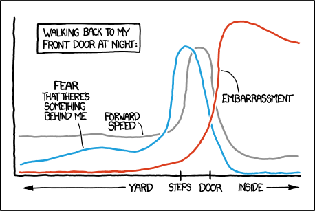

5 3.2 기본 R 플로팅
데이터 시각화에는 (적어도) 두 가지 유형이 있습니다. 첫 번째는 과학자가 데이터를 탐색하고 작동 중인 복잡한 과정에 대한 발견을 할 수 있게 해줍니다. 다른 유형의 시각화는 과학자가 다른 사람들에게 보여주고 궁극적으로 출판물에 포함할 수 있는, 결과에 대한 유익하고 명확하며 시각적으로 매력적인 삽화를 제공합니다.
이 두 가지 유형의 시각화 모두 R로 만들 수 있습니다. 사실 R은 여러 그래픽 시스템을 제공합니다. 이는 R이 확장 가능하기 때문이며, 수년간 R 그래픽의 발전이 기존 함수를 대체하는 것이 아니라 주로 패키지를 추가함으로써 진행되었기 때문입니다. 각각의 서로 다른 그래픽 시스템은 저마다의 장점과 한계가 있습니다. 이 장에서 우리는 그중 두 가지를 알아볼 것입니다. 먼저, 기본 R 플로팅(plotting) 함수들을 간단히 살펴봅니다1. 그 후에는 ggplot2로 전환할 것입니다.
1 이들은 모든 기본 R 설치 시 함께 제공되는 graphics 패키지에 들어 있습니다.
. 출처: https://en.wikipedia.org/wiki/Plotter."){kind=link}
그림 3.1: ZUSE 플로터 Z64 (1961년 발표). 출처: https://en.wikipedia.org/wiki/Plotter.
기본 R 그래픽은 역사적으로 가장 먼저 등장했습니다: 단순하고 절차적이며, 캔버스에 그리는 것에서 개념적 동기를 얻었습니다. 서로 다른 유형의 플롯을 위한 특화된 함수들이 있습니다. 이들은 호출하기 쉽지만, 더 복잡한 플롯을 구축하기 위해 이들을 결합하거나 하나를 다른 것으로 교체하고 싶을 때, 금방 지저분해지거나 심지어 불가능해질 수도 있습니다. 사용자는 (개념적인) 캔버스에 직접 플롯을 그립니다 (플로터(plotter)라는 단어는 최초의 그래픽 장치들 중 일부로 거슬러 올라갑니다 – 그림 3.1 참조). 사용자는 여백, 축 레이블, 제목, 범례, 하위 패널에 할당할 공간과 같은 결정들을 명시적으로 다루어야 합니다; 일단 무언가가 “그려지면(plotted)” 이동하거나 지울 수 없습니다.
좀 더 고수준의 접근 방식이 있습니다: 그래픽 문법(grammar of graphics) 에서는 그래픽이 모듈화된 논리적 조각들로부터 구축되므로, 우리가 인간 언어에서 문장의 일부를 갈아 끼울 수 있는 것처럼, 직관적이고 쉽게 해독할 수 있는 방식으로 데이터에 대한 서로 다른 시각화 유형들을 쉽게 시도해 볼 수 있습니다. 캔버스나 플로터라는 개념은 없습니다; 대신 사용자는 ggplot2 에 자신이 원하는 플롯에 대한 고수준의 설명을 R 객체 형태로 제공하며, 렌더링 엔진은 장면을 전체적으로 조망하여 그래픽을 배치하고 출력 장치에 렌더링합니다.
이 장에서 우리는 다음을 수행할 것입니다:
시각화를 통해 데이터 세트를 빠르고 유연하게 탐색하는 방법을 배웁니다.
과학적 발표와 출판물을 위해 아름답고 직관적인 플롯을 만듭니다.
기본 R 플로팅의 기초를 복습합니다.
그래픽 문법 개념 뒤에 숨겨진 논리를 이해합니다.
ggplot2 의
ggplot함수를 소개합니다.1차원, 2차원, 또는 심지어 3~5차원 데이터를 플로팅하는 방법을 살펴보고, 패싯(faceting)을 탐구합니다.
분자 생물학 데이터(또는 펩타이드와 같은 다른 서열)를 위해 “유전체를 따른(along-genome)” 플롯을 만듭니다.
대화형 그래픽에 대한 몇 가지 옵션들을 논의합니다.
가장 기본적인 함수는 plot입니다. 아래 코드(그 결과는 그림 3.2에 나와 있음)에서는 DNA를 분해하는 효소인 디옥시리보뉴클레아제(DNase)의 활성을 정량화하는 데 사용된 효소 결합 면역 흡착 분석(ELISA) 데이터를 플로팅하는 데 사용됩니다. 데이터는 기본 R과 함께 편리하게 제공되는 R 객체 DNase에 모여 있습니다. DNase 객체는 어세이 실행(run)을 나타내는 Run, 사용된 단백질 농도인 conc, 그리고 측정된 광학 밀도인 density 열을 가진 데이터 프레임입니다.
head(DNase)__
Run conc density
1 1 0.04882812 0.017
2 1 0.04882812 0.018
3 1 0.19531250 0.121
4 1 0.19531250 0.124
5 1 0.39062500 0.206
6 1 0.39062500 0.215
plot(DNase$conc, DNase$density)__
그림 3.2: DNase의 ELISA 어세이에 대한 농도 대 밀도 플롯.
이 기본적인 플롯은 그림 3.3에 표시된 것처럼 xlab, ylab 및 pch(플롯 기호) 매개변수들을 사용하여 사용자 정의할 수 있습니다. 변수들에 대한 정보는 DNase 객체에 저장되어 있으며, attr 함수를 사용하여 이에 접근할 수 있습니다.
plot(DNase$conc, DNase$density,
ylab = attr(DNase, "labels")$y,
xlab = paste(attr(DNase, "labels")$x, attr(DNase, "units")$x),
pch = 3,
col = "blue")__
그림 3.3: 동일한 데이터이지만 더 나은 축 레이블과 다른 플롯 기호를 사용한 모습.
__
질문 3.1
데이터 프레임 열에 긴 설명, 물리적 단위, 출처 정보 등과 같은 “메타데이터”를 주석으로 다는 것은 유용한 기능인 것 같습니다. DNase 객체에서와 같이 이러한 정보를 저장하는 방식이 R 생태계 전반에서 표준화되어 있거나 흔한가요? 이 작업을 수행하는 다른 표준화되거나 흔한 방식이 있나요?
__
해결책
__
일반적인 R data.frame 이나 tidyverse(data_frame , tibble)에는 이를 위한 훌륭하거나 널리 사용되는 인프라가 없습니다. 하지만 바이오컨덕터 패키지 S4Vectors 의 DataFrame 클래스를 살펴보세요. 이는 무엇보다도 SummarizedExperiment 의 행과 열에 주석을 다는 데 사용됩니다.
산점도 외에도 내장 함수들을 사용하여 히스토그램과 박스플롯을 만들 수 있습니다 (그림 3.4).
hist(DNase$density, breaks=25, main = "")
boxplot(density ~ Run, data = DNase)__

그림 3.4: (a) ELISA 어세이로부터 얻은 밀도 히스토그램, (b) 어세이 실행(run)별로 계층화된 이 값들의 박스플롯. 실행 정보가 텍스트 문자열로 저장되어 있어 상자들이 축을 따라 사전식 순서로 정렬되었습니다. 수치적 순서를 얻기 위해 R의 유형 변환 함수들을 사용할 수 있습니다.
박스플롯은 좁은 공간에 여러 분포를 나란히 보여주는 데 편리합니다. 우리는 3.6절에서 여러 단변량 분포를 플로팅하는 것에 대해 더 자세히 살펴볼 것입니다.
기본 R 플로팅 함수들은 데이터를 신속하게 대화형으로 탐색하는 데 훌륭합니다; 하지만 더 정교한 디스플레이를 만들고 싶다면 곧 한계에 부딪히게 됩니다. 우리는 ggplot2 패키지에 구현된, 논리적이고 우아한 방식으로 고품질 그래픽을 단계별로 구성할 수 있게 해주는 그래픽 문법(grammar of graphics)이라 불리는 시각화 프레임워크를 사용할 것입니다. 먼저 예제 데이터 세트를 소개하고 로드해 봅시다.
5.1 3.3 예제 데이터 세트

그림 3.5: 원시 내배엽(primitive endoderm)의 마커인 Serpinh1(파란색), Gata6(빨간색), Nanog(초록색)으로 염색된 E3.5 생쥐 배반포의 단일 단면 면역 형광 이미지.
ggplot2 의 기능을 제대로 시험해 보기 위해, 우리는 충분히 크고 복잡해서 여러 다른 각도에서 자르고 살펴볼 수 있는 데이터 세트가 필요합니다. 우리는 초기 발달 과정의 서로 다른 시점에서 얻은 약 100개의 개별 생쥐 배아 세포의 전사체를 보고하는 유전자 발현 마이크로어레이 데이터 세트를 사용할 것입니다. 포유류 배아는 수정란이라는 단일 세포에서 시작합니다. 동기화된 세포 분열의 물결을 통해, 수정란은 처음에는 서로 간에 뚜렷한 차이를 보이지 않는 세포 덩어리로 증식합니다. 하지만 어느 시점에서 세포들은 서로 다른 계통(lineages)을 선택합니다. 더 세부적인 명세화 과정을 거치면서, 완전한 유기체에 필요한 서로 다른 세포 유형과 조직들이 발생합니다. Ohnishi 등 (2014)에 의해 설명된 이 실험의 목적은 배아에서 발생하는 첫 번째 대칭성 붕괴 사건과 연관된 유전자 발현 변화를 조사하는 것이었습니다. 진행하면서 데이터를 더 자세히 설명하겠습니다. 자세한 내용은 논문과 바이오컨덕터 데이터 패키지 Hiiragi2013 의 문서에서 찾을 수 있습니다. 먼저 데이터를 로드합니다:

데이터 객체가 더 설명적인 이름 대신 x라는 다소 일반적인 이름을 가진 것은 유감입니다. 이름 충돌을 피하기 위해, 다음과 같은 코드를 실행하는 것이 가장 실용적인 해결책일 수 있습니다: esHiiragi = x; rm(list="x").
library("Hiiragi2013")__
In chunk 'loadHiiragi': Warning: replacing previous import 'boot::logit' by 'gtools::logit' whenloading 'Hiiragi2013'
In chunk 'loadHiiragi': Warning: replacing previous import 'boot::inv.logit' by 'gtools::inv.logit'when loading 'Hiiragi2013'
data("x")
dim(Biobase::exprs(x))__
[1] 45101 101R 프롬프트에 x를 입력하면 ExpressionSet 객체 x에 대한 더 자세한 요약을 출력할 수 있습니다. (바이오컨덕터 패키지 Biobase 의 exprs 함수를 통해 위에서 접근한) 데이터 행렬의 101개 열은 샘플(이들 각각은 단일 세포임)에 대응하며, 45,101개 행은 어레이(Affymetrix mouse4302 어레이)에 의해 프로브(probed)된 유전자들에 대응합니다. 데이터는 RMA 방법을 사용하여 정규화되었습니다 (Irizarry et al. 2003). 원시 데이터 또한 패키지 내(데이터 객체 a에 있음)와 EMBL-EBI의 ArrayExpress 데이터베이스(기탁 번호 E-MTAB-1681)에서 확인할 수 있습니다.
샘플들에 대해 어떤 정보가 가용한지 살펴봅시다2.
2 #CAB2D6 표기법은 색상의 RGB 좌표에 대한 16진수 표현입니다; 이에 대한 자세한 내용은 3.10.2절을 참조하세요.
head(pData(x), n = 2)__
File.name Embryonic.day Total.number.of.cells lineage genotype
1 E3.25 1_C32_IN E3.25 32 WT
2 E3.25 2_C32_IN E3.25 32 WT
ScanDate sampleGroup sampleColour
1 E3.25 2011-03-16 E3.25 #CAB2D6
2 E3.25 2011-03-16 E3.25 #CAB2D6제공된 정보는 세포에 관한 정보(즉, 세포가 얻어진 배아의 나이, 크기 및 유전자형)와 기술적 정보(스캔 날짜, 원시 데이터 파일 이름)가 섞여 있습니다. 관례에 따라 생쥐 배아 발달 시간은 일 단위로 측정되며, 예를 들어 E3.5와 같이 보고됩니다. 또한 논문에서 저자들은 세포의 나이, 유전자형 및 계통에 기초하여 세포들을 8개의 생물학적 그룹(sampleGroup)으로 나누었고, 이 그룹들을 나타내기 위한 색상 체계(sampleColour3)를 정의했습니다. 다음 코드를 사용하여 (설명은 아래 참조), 각 그룹에 대한 요약 정보(세포 수와 선호하는 색상)를 포함하는 작은 데이터 프레임 groups를 정의합니다.
3 데이터 세트의 이 식별자는 영국식 철자(colour)를 사용합니다. 이 책의 다른 곳에서는 미국식 철자(color)를 사용합니다. ggplot2 패키지는 일반적으로 두 철자 모두를 허용합니다.
library("dplyr")
groups = group_by(pData(x), sampleGroup) |>
summarise(n = n(), color = unique(sampleColour))
groups __
# A tibble: 8 × 3
sampleGroup n color
<chr> <int> <chr>
1 E3.25 36 #CAB2D6
2 E3.25 (FGF4-KO) 17 #FDBF6F
3 E3.5 (EPI) 11 #A6CEE3
4 E3.5 (FGF4-KO) 8 #FF7F00
5 E3.5 (PE) 11 #B2DF8A
6 E4.5 (EPI) 4 #1F78B4
7 E4.5 (FGF4-KO) 10 #E31A1C
8 E4.5 (PE) 4 #33A02C이름에 FGF4-KO가 포함된 그룹의 세포들은 세포 분화의 중요한 조절 인자인 FGF4 유전자가 녹아웃(knocked out)된 배아로부터 온 것입니다. E3.5부터 야생형(wildtype) 세포(FGF4 녹아웃이 없는 경우)는 첫 번째 대칭성 붕괴 사건을 겪으며, 다분화능 에피블라스트(pluripotent epiblast, EPI)와 원시 내배엽(primitive endoderm, PE)이라 불리는 서로 다른 세포 계통으로 분화됩니다.
위의 코드 청크는 dplyr 패키지의 파이프 연산자 |>와 함수 group_by, summarise를 처음 접하는 사례일 수 있으므로, 코드를 풀어보겠습니다. 먼저 파이프 |> 4입니다. 일반적으로 파이프는 중첩된 함수 호출을 사람이 더 읽기 쉽게 만드는 데 유용합니다. 다음 두 줄의 R 코드는 서로 동일합니다.
4 |>는 2021년에 출시된 버전 4.1부터 기본 R에 포함된 파이프 연산자입니다. 패키지 magrittr 는 이와 유사하지만(동일하지는 않음) 오래전부터 %>% 연산자를 제공해 왔으며, %<>%나 %T>%와 같은 다른 여러 파이프 관련 연산자들도 제공합니다. 이 책의 많은 부분이 2021년 이전에 쓰였으므로, magrittr 의 %>% 연산자가 많은 곳에서 사용되고 있습니다. 우리는 이 코드에서처럼 책을 유지보수하는 동안 가끔씩 %>%를 |>로 업데이트하고 있습니다.
f(x) |> g(y) |> h()
h(g(f(x), y))__이는 ” f(x)를 평가한 다음, 그 결과를 첫 번째 인수로 하여 함수 g에 전달하고, y는 g의 두 번째 인수로 전달하라. 그런 다음 g의 출력을 함수 h에 전달하라”는 뜻입니다. 이를 무한히 반복할 수 있습니다. 특히 인수 x와 y 자체가 복잡한 표현식이거나 꽤 긴 함수 체인이 관여하는 경우, 첫 번째 버전이 더 읽기 쉬운 경향이 있습니다.
group_by 함수는 후속되는 모든 작업이 전체 데이터 프레임에 한꺼번에 적용되는 것이 아니라, sampleGroup 요인(factor)에 의해 정의된 블록별로 적용되어야 한다는 메모를 데이터 프레임에 남깁니다. 마지막으로 summarise는 요약 통계량을 계산합니다; 이는 예를 들어 mean이나 sum이 될 수 있습니다; 이 사례에서 우리는 단순히 각 블록의 행 개수인 n()과 대표 색상을 계산했습니다.
5.2 3.4 ggplot2
ggplot2 는 Leland Wilkinson이 그의 저서 (Wilkinson 2005)에서 창안한 그래픽 문법(grammar of graphics) 개념을 구현한 Hadley Wickham (Wickham 2016)의 패키지입니다. 우리는 이 장에서 그 기능 중 일부를 탐구할 것이며, 이 책의 나머지 부분에서 이것이 어떻게 사용될 수 있는지에 대한 많은 예시들을 보게 될 것입니다. 패키지에 대한 포괄적인 문서는 웹사이트에서 찾을 수 있습니다. 온라인 문서에는 이 장에서 소개된 각 그래픽 유형(및 그 이상)에 대한 예제 사용 사례들이 포함되어 있으며, 그림을 만들 때 매우 유용한 리소스입니다.
패키지를 로드하고 그림 3.2의 간단한 플롯을 다시 만들어 보는 것부터 시작합시다.
library("ggplot2")
ggplot(DNase, aes(x = conc, y = density)) + geom_point()__
그림 3.6: 기본 그래픽 그림 3.2와 유사한, 우리의 첫 번째 ggplot2 그림.
우리는 방금 그래픽 문법을 사용하여 첫 번째 “문장”을 썼습니다. 이 문장을 분해해 봅시다. 먼저 데이터가 들어있는 데이터 프레임인 DNase를 지정했습니다. aes ( 미학(aesthetic) 의 약자) 인수는 우리가 어떤 변수들을 각각 (x\)축과 (y\)축에 매핑하고 싶은지를 명시합니다. 마지막으로 geom_point 함수를 호출한 결과를 더함으로써, 플롯이 (예를 들어 선이나 막대가 아닌) 점들을 사용하기를 원한다고 명시했습니다.
이제 생쥐 단일 세포 데이터로 돌아가서, ggplot 함수를 사용하여 8개 그룹 각각의 샘플 수를 플롯해 봅시다. 결과는 그림 3.7에 나와 있습니다.
ggplot(groups, aes(x = sampleGroup, y = n)) +
geom_bar(stat = "identity")__
그림 3.7: 생쥐 단일 세포 데이터의 그룹 크기 표로부터 ggplot 함수로 생성된 막대 그래프.
geom_bar를 통해 우리는 이제 각 데이터 항목(groups의 각 행)이 막대(bar)로 표현되기를 원한다고 ggplot에게 말했습니다. 막대는 ggplot2 패키지 용어로 geom 이라 부르는 기하학적 객체의 한 예입니다. 우리는 이미 그림 3.6에서 geom_point 함수에 의해 표시된 점이라는 또 다른 객체를 보았습니다. 나중에 다른 많은 geom들을 만나게 될 것입니다. 우리는 aes를 사용하여 그룹이 (x\)축을 따라, 크기가 (y\)축을 따라 표시되기를 원한다고 명시했습니다. 마지막으로 geom_bar 함수에 stat = "identity" (즉, 아무것도 하지 않음) 인수를 제공했는데, 그렇지 않으면 함수가 데이터의 히스토그램을 계산하려 시도할 것이기 때문입니다 (stat의 기본값은 “count”입니다). stat은 통계량(statistic) 의 약자로, 데이터를 축소하는 모든 함수를 일컫는 말입니다. identity와 count 통계량 외에도 평활화(smoothing), 평균화, 구간화(binning) 또는 다른 방식으로 데이터를 축소하는 다른 연산들이 있습니다.
데이터, 기하학적 객체, 통계량이라는 이러한 개념들은 영어 문장의 구성 요소인 명사, 동사, 부사와 마찬가지로 그래픽 문법을 구성하는 재료들입니다.
__
태스크
(x\)와 (y\) 미학을 뒤집어서 가로 막대 그래프를 만들어 보세요.
그림 3.7의 플롯은 나쁘지 않지만, 몇 가지 개선할 점이 있습니다. 막대에 색상을 사용하면 어떤 막대가 어떤 그룹에 해당하는지 신속하게 파악하는 데 도움이 될 수 있습니다. 이는 여러 플롯에서 동일한 색상 체계를 사용할 때 특히 유용합니다. 이를 위해, sampleGroup의 각 가능한 값에 대해 우리가 원하는 색상을 포함하는 이름이 지정된 벡터 groupColor를 정의해 봅시다.5
5 이 정보는 groups 데이터 프레임의 sampleGroup 및 color 열에 있는 정보와 완전히 동일합니다; 단지 ggplot2 가 이 정보를 이름이 지정된 벡터 형식으로 기대한다는 점에 맞추는 것뿐입니다.
groupColor = setNames(groups$color, groups$sampleGroup)__그림 3.7에서 수정해야 할 또 다른 사항은 막대 레이블의 가독성입니다. 지금은 레이블들이 서로 겹치고 있는데, 이는 설명적인 이름을 가질 때 흔히 발생하는 문제입니다.
ggplot(groups, aes(x = sampleGroup, y = n, fill = sampleGroup)) +
geom_bar(stat = "identity") +
scale_fill_manual(values = groupColor, name = "Groups") +
theme(axis.text.x = element_text(angle = 90, hjust = 1))__
그림 3.8: 그림 3.7과 유사하지만 색상이 입혀진 막대와 더 나은 막대 레이블을 사용한 모습.
이것은 이제 이미 더 길고 복잡한 문장입니다. 이를 분석해 봅시다. 우리는 aes 함수에 sampleGroup에 기초하여 막대가 채워지기를(색상이 입혀지기를) 원한다는 것을 명시하는 fill 인수를 추가했습니다 (이 경우 공교롭게도 x 인수의 값과 같지만, 항상 그럴 필요는 없습니다). 또한 scale_fill_manual 함수 호출을 추가했는데, 이 함수는 가능한 변수 값으로부터 관련 색상으로의 매핑인 색상 맵(color map)을 이름이 지정된 벡터로 입력받습니다. 우리는 또한 이 색상 맵에 제목을 부여했습니다 (더 복잡한 플롯에서는 여러 개의 서로 다른 색상 맵이 관여할 수 있음에 유의하세요). 만약 scale_fill_manual 호출을 생략했다면, ggplot2 는 자체적인 기본 색상 선택을 사용했을 것입니다. 우리는 또한 theme 호출을 추가하여 (x\)축 레이블을 90도 회전시키고 오른쪽 정렬(hjust; 기본값은 중앙 정렬)하도록 명시했습니다.
5.2.1 3.4.1 데이터 흐름
ggplot 함수는 데이터를 데이터 프레임 형태로 기대합니다. 만약 데이터가 행렬이나 별도의 벡터, 또는 다른 유형의 객체에 들어있다면 변환해야 합니다. dplyr 이나 broom 등의 패키지가 이 목적을 위한 기능을 제공합니다. 우리는 이에 대해 13.10절에서 더 자세히 다룰 것이며, 책 전체에서 이러한 변환의 예시들을 보게 될 것입니다.
이는 기본 R의 data.frame 뿐만 아니라 tidyverse의 tibble 패키지에 있는 tibble (및 동의어인 data_frame) 클래스들도 포함합니다.
ggplot 호출의 결과는 ggplot 객체입니다. 위에서의 코드 조각을 다시 떠올려 봅시다:
gg = ggplot(DNase, aes(x = conc, y = density)) + geom_point()__우리는 여기서 ggplot의 출력을 콘솔로 직접 보내 그림 3.6을 “출력”하는 대신, gg 객체에 할당했습니다. 이 상황은 R 콘솔에서 작업할 때 익숙한 것과 완전히 동일합니다: 1+1과 같은 표현식을 입력하고 “Enter”를 누르면 결과가 출력됩니다. 표현식이 s = 1+1과 같은 할당문인 경우, 부작용(side effect)이 일어나지만(메모리상의 객체에 s라는 이름이 바인딩됨) 아무것도 출력되지 않습니다. 유사하게, source로 호출된 스크립트의 일부로 표현식이 평가될 때도 출력되지 않습니다. 따라서 위 코드 역시 print 메서드가 호출되지 않았으므로 그래픽 출력을 생성하지 않습니다. gg를 출력하려면 (대화형 세션에서) 그 이름을 입력하거나 print를 호출하면 됩니다:
gg
print(gg)__5.2.2 3.4.2 그림 저장하기
ggplot2 에는 ggsave라는 내장 플롯 저장 함수가 있습니다:
ggplot2::ggsave("DNAse-histogram-demo.pdf", plot = gg)__플롯을 저장하는 두 가지 주요 방식은 벡터 그래픽(vector graphics)과 래스터(raster, 픽셀) 그래픽입니다. 벡터 그래픽에서 플롯은 점, 선, 곡선, 도형 및 타이포그래피 문자와 같은 일련의 기하학적 원형(primitives)으로 저장됩니다. R에서 플롯을 벡터 그래픽 형식으로 저장할 때 선호되는 형식은 PDF입니다. 래스터 그래픽에서 플롯은 도트 매트릭스 데이터 구조로 저장됩니다. 래스터 형식의 주요 한계는 가용한 픽셀 수에 따른 제한된 해상도입니다. R에서 래스터 그래픽 출력에 가장 흔히 사용되는 장치는 png입니다. 일반적으로 플롯을 벡터 그래픽 형식으로 저장하는 것이 바람직합니다. 나중에 언제든지 벡터 그래픽 파일을 원하는 해상도의 래스터 형식으로 변환할 수 있는 반면, 그 반대는 매우 어렵기 때문입니다. 발표 자료나 논문의 그림이 픽셀화 아티팩트 때문에 보기 흉해지는 것을 원치 않으실 것입니다!
5.3 3.5 그래픽 문법
ggplot2 의 그래픽 문법 구성 요소는 다음과 같습니다:
하나 이상의 데이터 세트,
데이터를 시각적으로 표현하는 역할을 하는 하나 이상의 기하학적 객체 – 예를 들어 점, 선, 직사각형, 등고선 등,
데이터의 변수들이 기하학적 객체의 시각적 속성(미학)에 어떻게 매핑되는지에 대한 설명과 관련 척도(scale) (예: 선형, 로그, 순위),
하나 이상의 좌표계,
통계적 요약 규칙,
패싯 명세(facet specification), 즉 동일한 데이터의 하위 집합들을 살펴보기 위해 여러 개의 유사한 서브플롯(subplots)을 사용하는 것,
레이아웃과 렌더링에 영향을 미치는 선택적 매개변수들 (예: 텍스트 크기, 글꼴 및 정렬, 범례 위치).
위의 예제들인 그림 3.7과 3.8에서 데이터 세트는 groupsize였고, 변수들은 수치값들과 groupsize의 이름들이었으며, 우리는 이들을 각각 (y\)축과 (x\)축 미학에 매핑했습니다. 척도는 (y\)축에 대해서는 선형이었고 (x\)축에 대해서는 순위 기반이었습니다 (막대들이 알파벳순으로 정렬되었고 각 막대는 동일한 너비를 가짐). 그리고 기하학적 객체는 직사각형 막대였습니다.
위 목록의 4~7번 항목은 선택 사항입니다. 이를 지정하지 않으면 좌표계로 데카르트 좌표계가 사용되고, 통계적 요약은 사소한 것(즉, identity)이 사용되며, 패싯이나 서브플롯은 만들어지지 않습니다 (나중에 3.8절에서 예시를 볼 것입니다). 처음 세 가지 항목은 필수입니다: 유효한 ggplot2 “문장”은 각각을 적어도 하나씩 포함해야 합니다.
사실 ggplot2 의 그래픽 문법 구현은 레이어(layers) (Wickham 2010)라 불리는 구조를 통해 동일한 유형의 컴포넌트를 여러 번 사용할 수 있게 해줍니다. 예를 들어, 아래 코드는 동일한 데이터에 대해 세 가지 유형의 기하학적 객체인 점, 선, 그리고 신뢰 구간(confidence band)을 동일한 플롯에서 사용합니다.
dftx = data.frame(t(Biobase::exprs(x)), pData(x))
ggplot( dftx, aes( x = X1426642_at, y = X1418765_at )) +
geom_point( shape = 1 ) +
geom_smooth( method = "loess" )__
그림 3.9: 동일한 데이터의 서로 다른 통계량을 보여주는 세 개의 레이어를 가진 산점도: 점(geom_point), 부드러운 회귀선 및 신뢰 구간(뒤의 두 개는 geom_smooth로부터 생성됨).
여기서 우리는 표현 데이터(Biobase::exprs(x))와 샘플 주석 데이터(pData(x))를 모두 모아서 dftx라는 데이터 프레임으로 만들어야 했습니다 – 이는 이것이 ggplot2 함수들이 입력으로 가장 쉽게 받아들이는 데이터 형식이기 때문입니다 (13.10절에서 더 자세히 다룹니다).
우리는 색상을 사용하여 플롯을 더욱 개선할 수 있습니다 – 그림 3.9의 각 점이 하나의 샘플에 대응하므로, 객체 x에 있는 sampleColour 정보를 사용하는 것이 타당합니다.
ggplot(dftx, aes(x = X1426642_at, y = X1418765_at)) +
geom_point(aes(color = sampleGroup), shape = 19) +
scale_color_manual(values = groupColor, guide = "none") +
geom_smooth(method = "loess")__
그림 3.10: 그림 3.9와 같지만, 추가로 시점과 세포 계통(그림 3.8에서 정의됨)에 따라 점들에 색상이 입혀졌습니다. 이제 우리는 Timd2 유전자(()y축을 따른 프로브 1418765_at에 의해 타겟팅됨)의 발현값이 초기 시점에서는 일관되게 높은 반면, E3.5와 E4.5의 EPI 샘플에서는 발현이 감소하는 것을 볼 수 있습니다. FGF4-KO에서는 이러한 감소가 지연되어 E3.5에서도 여전히 발현이 높습니다. 반대로 Fn1 유전자(1426642_at, ()x축)는 초기 시점에는 꺼져 있다가 E3.5와 E4.5에서 올라갑니다. PE 샘플(초록색)은 높은 수준의 세포 간 가변성을 보여줍니다.
__
질문 3.2
위의 코드에서 우리는 geom_point 레이어에 대해서만 color 미학(aes)을 정의한 반면, x와 y 미학은 모든 레이어에 대해 정의했습니다. 만약 우리가 color 미학을 모든 레이어에 대해 설정한다면, 즉 ggplot의 인수 목록으로 옮긴다면 어떤 일이 일어날까요?
__
질문 3.3
그림 3.9와 3.10에서와 같이 산점도 데이터를 회귀선과 함께 시각화하는 것이 항상 의미가 있을까요?
여담으로, 이러한 프로브 식별자들이 어떤 유전자를 타겟팅하는지, 그리고 그들이 무엇을 하는지 알고 싶다면 다음과 같이 호출할 수 있습니다:
여기서는 (예를 들어 앞서 붙었던 “X”가 없는 “1426642_at”과 같이) 원래의 특징 식별자들을 사용해야 함에 유의하세요. 이것이 마이크로어레이 제조사, 바이오컨덕터 주석 패키지, 그리고 객체 x 내부에서 사용되는 표기법입니다. 우리가 앞서 dftx로 작업할 때 사용했던 선행 “X”는 data.frame 생성자 함수에 의해 dftx 생성 중에 삽입된 것인데, 이는 해당 함수의 check.names 인수가 기본적으로 TRUE로 설정되어 있기 때문입니다. 또는 check.names = FALSE로 설정하여 원래의 식별자 표기법을 유지할 수도 있었겠지만, 그럴 경우 R이 코드(예: aes() 호출 등)에서 이들을 올바르게 해석할 수 있도록 식별자 주위에 역따옴표(backtick)를 사용해야 합니다.
패키지 이름을 포함한 완전 수식 이름(fully qualified name)으로 select 함수를 호출하기 위해 :: 연산자를 사용한 것에 주목하세요. 우리는 이미 2장에서 이를 접했습니다.
library("mouse4302.db")__
AnnotationDbi::select(mouse4302.db,
keys = c("1426642_at", "1418765_at"), keytype = "PROBEID",
columns = c("SYMBOL", "GENENAME"))__
PROBEID SYMBOL GENENAME
1 1426642_at Fn1 fibronectin 1
2 1418765_at Timd2 T cell immunoglobulin and mucin domain containing 2ggplot을 사용할 때, 대개 데이터, 미학, 기하학적 객체만 지정하면 됩니다. 대부분의 기하학적 객체는 데이터에 적합한 기본 통계 요약을 암묵적으로 호출합니다. 예를 들어 geom_smooth를 사용하면 ggplot2 는 기본적으로 stat = "smooth"를 사용하여 선을 표시합니다; geom_histogram을 사용하면 데이터가 구간화(binned)되고 그 결과가 막대 그래프 형태로 표시됩니다. 여기에 예시가 있습니다:
dfx = as.data.frame(Biobase::exprs(x))
ggplot(dfx, aes(x = `20 E3.25`)) + geom_histogram(binwidth = 0.2)__
그림 3.11: E3.25 시점의 특정 샘플 하나(세포 번호 20)에 대한 프로브 강도 히스토그램.
__
질문 3.4
객체 dfx와 dftx 사이의 차이점은 무엇인가요? 왜 이 두 가지를 모두 만들어야 했을까요?
위의 막대 그래프 예제로 돌아가 봅시다.
pb = ggplot(groups, aes(x = sampleGroup, y = n))__이는 플롯 객체 pb를 생성합니다. 만약 이를 표시하려 한다면, 기하학적 객체를 지정하지 않았기 때문에 빈 플롯이 생성될 것입니다. 지금까지 우리의 pb 객체에 들어있는 전부는 데이터와 미학뿐입니다 (그림 3.12).
class(pb)__
[1] "gg" "ggplot"
pb __
그림 3.12: pb: 기하학적 객체(geom)가 없으므로 플롯 영역이 비어 있습니다. 기본 스타일 매개변수 하에서 (x\)축의 눈금 레이블은 읽을 수 없습니다.
이제 + 연산자를 사용하여 플롯의 다른 구성 요소들을 간단히 덧붙일 수 있습니다 (그림 3.13):
pb = pb + geom_bar(stat = "identity")
pb = pb + aes(fill = sampleGroup)
pb = pb + theme(axis.text.x = element_text(angle = 90, hjust = 1))
pb = pb + scale_fill_manual(values = groupColor, name = "Groups")
pb __
그림 3.13: 그래픽 객체 bp의 완성된 모습.
이미 어떤 방식으로든 생성된 그래픽 객체를 가져와서 더 정제해 나가는 이러한 단계별 구축 방식은, 그래픽을 생성하는 단일 함수 호출에 모든 지침을 한꺼번에 제공하는 것보다 더 편리하고 관리하기 쉬울 수 있습니다.
우리는 매번 처음부터 플롯을 다시 만들 필요 없이, 부분적으로 완성된 객체를 저장한 다음 이를 다른 방식으로 수정함으로써 다양한 시각화 아이디어를 빠르게 시도해 볼 수 있습니다. 예를 들어, 막대 그래프의 대안적인 시각화를 만들기 위해 플롯을 극좌표계로 전환할 수 있습니다.
pb.polar = pb + coord_polar() +
theme(axis.text.x = element_text(angle = 0, hjust = 1),
axis.text.y = element_blank(),
axis.ticks = element_blank()) +
xlab("") + ylab("")
pb.polar __
그림 3.14: 극좌표계에서의 막대 그래프.
위 코드에서 우리가 이전에 설정했던 theme 매개변수를 단순히 새로운 값으로 설정함으로써 덮어쓸 수 있음에 유의하세요 – 원래 theme을 설정했던 pb를 다시 생성할 필요가 없습니다.
5.4 3.6 1차원 데이터 시각화
생물학적 데이터 분석에서 흔한 작업 중 하나는 여러 단변량 측정값 샘플을 비교하는 것입니다. 이 섹션에서 우리는 그러한 샘플들을 시각화하고 비교하기 위한 몇 가지 가능성들을 탐구해 볼 것입니다. 예제로서 Fgf4, Gata4, Gata6, Sox2라는 네 가지 유전자의 강도 데이터를 사용하겠습니다6. 마이크로어레이 상에서 이들은 다음과 같이 표현됩니다:
6 이 유전자들에 대해서는 (Ohnishi et al. 2014)에서 더 자세히 읽어볼 수 있습니다.
selectedProbes = c( Fgf4 = "1420085_at", Gata4 = "1418863_at",
Gata6 = "1425463_at", Sox2 = "1416967_at")__이 표현으로부터 데이터를 추출하여 데이터 프레임으로 변환하기 위해, 우리는 reshape2 패키지의 melt 함수를 사용합니다7.
7 우리는 서로 다른 데이터 표현 방식의 개념과 메커니즘에 대해 13.10절에서 더 이야기할 것입니다.
library("reshape2")
genes = melt(Biobase::exprs(x)[selectedProbes, ],
varnames = c("probe", "sample"))__정확성을 위해, 프로브 식별자와 함께 유전자 심볼을 제공하는 열을 추가합니다.
genes$gene =
names(selectedProbes)[match(genes$probe, selectedProbes)]
head(genes)__
probe sample value gene
1 1420085_at 1 E3.25 3.027715 Fgf4
2 1418863_at 1 E3.25 4.843137 Gata4
3 1425463_at 1 E3.25 5.500618 Gata6
4 1416967_at 1 E3.25 1.731217 Sox2
5 1420085_at 2 E3.25 9.293016 Fgf4
6 1418863_at 2 E3.25 5.530016 Gata45.4.1 3.6.1 막대 그래프
우리 데이터 프레임 genes와 같은 데이터를 표시하는 인기 있는 방법은 막대 그래프입니다 (그림 3.15).
ggplot(genes, aes(x = gene, y = value)) +
stat_summary(fun = mean, geom = "bar")__
그림 3.15: 네 프로브로부터 얻은 발현 측정값 분포의 평균을 보여주는 막대 그래프.
그림 3.15에서 각 막대는 해당 유전자에 대한 값들의 평균을 나타냅니다. 이러한 플롯은 생물 과학 분야뿐만 아니라 대중 매체에서도 흔히 사용됩니다. 하지만 데이터를 평균이라는 단 하나의 숫자로 요약하는 것은 많은 정보를 잃게 만들며, 공간을 차지하는 정도에 비해 막대 그래프는 데이터를 시각화하는 효율적인 방법이 아닙니다8.
8 사실 평균이 적절한 요약치가 아닌 경우(예: 심하게 치우치거나 다봉형인 분포, 또는 큰 이상치가 있는 데이터 세트의 경우), 이러한 유형의 시각화는 완전히 오도할 수 있습니다.
때때로 오차 막대(error bars)를 추가하고 싶을 때가 있는데, ggplot2 에서 이를 수행하는 한 가지 방법은 다음과 같습니다.
library("Hmisc")
ggplot(genes, aes( x = gene, y = value, fill = gene)) +
stat_summary(fun = mean, geom = "bar") +
stat_summary(fun.data = mean_cl_normal, geom = "errorbar",
width = 0.25)__
그림 3.16: 평균의 표준 오차를 나타내는 오차 막대가 포함된 막대 그래프.
여기서 우리는 레이어형 그래픽의 원리를 다시 보게 됩니다: 우리는 두 개의 요약 함수인 mean과 mean_cl_normal, 그리고 그에 연관된 두 개의 기하학적 객체인 bar와 errorbar를 사용했습니다. mean_cl_normal 함수는 Hmisc 패키지에서 온 것으로 평균의 표준 오차(또는 신뢰 한계, c onfidence l imits)를 계산합니다; 이는 간단한 함수이므로, 원한다면 베이스 R 표현식을 사용하여 직접 계산할 수도 있습니다. 우리는 또한 플롯을 더 시각적으로 돋보이게 하기 위해 막대에 색상을 입혔습니다.
5.4.2 3.6.2 박스플롯
박스플롯(Boxplots)은 막대 그래프와 비슷한 공간을 차지하면서도 훨씬 더 많은 정보를 제공합니다.
p = ggplot(genes, aes( x = gene, y = value, fill = gene))
p + geom_boxplot()__
그림 3.17: 박스플롯.
그림 3.17에서 우리는 두 유전자(Gata4, Gata6)가 비교적 집중된 분포를 가지고 있으며 오직 몇몇 데이터 포인트만이 더 높은 값 쪽으로 뻗어 있음을 알 수 있습니다. Fgf4의 경우, 박스 안의 중앙값(수평 검은색 막대)이 박스의 아래쪽(또는 왼쪽) 측면에 더 가깝기 때문에 분포가 오른쪽으로 치우쳐(right-skewed) 있음을 볼 수 있습니다. 반대로 Sox2의 분포는 왼쪽으로 치우쳐 있습니다.
5.4.3 3.6.3 점 도표와 벌떼 도표
데이터 포인트의 수가 너무 많지 않다면, 앞서 보았던 요약 수치들 대신 데이터 포인트들을 직접 보여주는 것이 가능하며 좋은 실무입니다. 하지만 데이터를 직접 플로팅하면 점들이 서로 겹치는 경우가 많아 시각적으로 불쾌하거나 심지어 데이터를 가릴 수도 있습니다. 우리는 점들이 겹치지 않으면서도 최대한 원래 위치에 가깝게 배치되도록 시도해 볼 수 있습니다 (Wilkinson 1999).
p + geom_dotplot(binaxis = "y", binwidth = 1/6,
stackdir = "center", stackratio = 0.75,
aes(color = gene))
library("ggbeeswarm")
p + geom_beeswarm(aes(color = gene))__[ ](03-chap_files/figure-html/fig-graphics-oneddot-1.png “그림 3.18 (a):”)
](03-chap_files/figure-html/fig-graphics-oneddot-1.png “그림 3.18 (a):”)
[ ](03-chap_files/figure-html/fig-graphics-oneddot-2.png “그림 3.18 (b):”)
](03-chap_files/figure-html/fig-graphics-oneddot-2.png “그림 3.18 (b):”)
그림 3.18: (a) ggplot2 의 geom_dotplot으로 만든 점 도표(Dot plots). (b) ggbeeswarm 패키지의 geom_beeswarm으로 만든 벌떼 도표(Beeswarm plots).
그림 3.18의 (a) 패널에 있는 플롯은 점들의 (y\) 좌표를 구간화(discretize)하고(위에서 우리는 구간 크기를 1/6로 선택했습니다), 그 후 이들을 서로 옆으로 쌓아 올립니다.
대안적인 방식은 ggbeeswarm 패키지의 geom_beeswarm에 의해 제공됩니다. 이 플롯은 그림 3.18의 (b) 패널에 나와 있습니다. 레이아웃 알고리즘은 점들 사이의 겹침을 피하는 것을 목표로 합니다. 만약 어떤 점이 기존의 점과 겹치게 되면, 겹침을 피할 수 있을 만큼만 (x\)축을 따라 옆으로 이동시킵니다. 점 도표나 벌떼 도표를 보기 좋게 만들려면 대개 새로운 데이터 세트마다 레이아웃 매개변수들을 약간씩 조정해야 합니다.
5.4.4 3.6.4 밀도 도표
동일한 데이터를 표현하는 또 다른 방법은 밀도 도표(density plots)입니다. 여기서는 데이터 포인트들을 평활화하여 기저의 데이터 생성 밀도를 추정하려 시도합니다 (그림 3.19).
ggplot(genes, aes( x = value, color = gene)) + geom_density()__
그림 3.19: 밀도 도표.
그림 3.17—3.19로부터 볼 수 있듯이, 박스플롯은 단봉형(unimodal) 데이터에 대해서는 상당히 잘 작동하지만 데이터 분포가 다봉형(multimodal)인 경우에는 오도할 수 있으며, 꼬리가 긴(long-tailed) 분포의 특성을 항상 공정하게 보여주지는 못합니다. 데이터 포인트나 그 밀도를 직접 보여줌으로써 그림 3.18—3.19는 그러한 특징들을 더 잘 보여줍니다. 예를 들어, 우리는 Fgf4와 Sox2 데이터가 이봉형임을 알 수 있고, Gata4와 Gata6은 대부분의 값들이 기준선 근처에 모여 있지만 특정 분율의 세포들은 넓은 값의 범위에 걸쳐 발현 수준이 높아져 있음을 볼 수 있습니다.
하지만 밀도 추정에는 여러 복잡한 문제들이 따르는데, 특히 평활화 윈도우(smoothing window)를 선택해야 할 필요성이 있습니다. 데이터가 조밀한 영역에서 정점들을 포착할 만큼 충분히 작은 윈도우 크기는 다른 곳에서 불안정한(“꾸불꾸불한”) 추정치를 낳을 수 있습니다. 반면에 윈도우를 너무 크게 잡으면 정점들과 같은 밀도의 뚜렷한 특징들이 뭉개질 수 있습니다. 또한 밀도 선들은 밀도를 추정하는 데 얼마나 많은 데이터가 사용되었는지에 대한 정보를 전달하지 않으므로, 그림 3.19와 같은 플롯은 곡선들 간의 샘플 크기가 다를 때 특히 문제가 될 수 있습니다.
5.4.5 3.6.5 바이올린 도표
그림 3.19와 같은 밀도 도표는 밀도가 여러 개인 경우 복잡해 보일 수 있으며, 한 가지 아이디어는 박스플롯에서 영감을 얻은 레이아웃으로 밀도들을 배치하는 것입니다: 바로 바이올린 도표(violin plot)입니다 (그림 3.20). 여기서는 밀도 추정치를 사용하여 대칭적인 모양을 그리는데, 이것이 때때로 시각적으로 바이올린을 연상시킵니다.
p + geom_violin()__
그림 3.20: 바이올린 도표.
5.4.6 3.6.6 능선 도표
밀도 도표를 변주한 또 다른 방식은 능선 도표(ridgeline plots)입니다 (그림 3.21):
library("ggridges")
ggplot(genes, aes(x = value, y = gene, fill = gene)) +
geom_density_ridges()__
그림 3.21: 능선 도표.
이러한 유형의 디스플레이는 표시할 밀도의 개수가 수십 개에 달할 때 가장 적절할 것입니다.
top42 = order(rowMeans(Biobase::exprs(x)), decreasing = TRUE)[1:42]
g42 = melt(Biobase::exprs(x)[rev(top42), ], varnames = c("probe", "sample"))
ggplot(g42, aes(x = value, y = probe)) __
그림 3.22: 그림 3.21과 유사하지만 유전자 수가 더 많은 경우.
5.4.7 3.6.7 ECDF 도표
1차원 확률 변수 (X\)의 분포를 설명하는 가장 수학적으로 편리한 방법은 그 누적 분포 함수(cumulative distribution function, CDF) 입니다. 즉, 다음과 같이 정의되는 함수입니다:
\[ F(x) = P(Xx), \]
여기서 (x\)는 실수축 전체의 값을 취합니다. (X\)의 밀도는 (F\)가 존재한다면 그 도함수입니다9. 식 3.1에서의 확률에 대한 유한 표본 버전은 경험적 누적 분포 함수(empirical cumulative distribution function, ECDF) 라고 불립니다:
9 정의에 의해 (F\)는 작은 (x\) ((x-\))에 대해 0으로 가고, 큰 (x\) ((x+\))에 대해 1로 갑니다.
\[ F_{n}(x) = = _{i=1}^n 𝟙({xx_i}), \]
여기서 (x_1, …, x_n\)은 (X\)로부터의 (n\)번의 추출을 나타내고, (𝟙\)은 인수의 표현식이 참이면 1이고 그렇지 않으면 0을 취하는 지시 함수(indicator function)입니다. 만약 이것이 추상적으로 들린다면, 다음 예제로부터 아마도 더 직관적인 이해를 얻을 수 있을 것입니다 (그림 3.23):
simdata = rnorm(70)
tibble(index = seq(along = simdata),
sx = sort(simdata)) %>%
ggplot(aes(x = sx, y = index)) + geom_step()__
그림 3.23: 정렬된 simdata 값 대 그들의 인덱스. 이것이 simdata의 경험적 누적 분포 함수입니다.
정렬된 값들을 그들의 순위(rank)에 대해 플로팅하면 ECDF의 본질적인 특징들이 나타납니다 (그림 3.23). 실제로는 위의 코드에서와 같이 정렬 및 다른 단계들을 수동으로 수행할 필요 없이, 대신 stat_ecdf() 기하학적 객체를 사용할 것입니다. 우리 데이터의 ECDF가 그림 3.24에 나와 있습니다.
ggplot(genes, aes( x = value, color = gene)) + stat_ecdf()__.")
그림 3.24: 경험적 누적 분포 함수(ECDF).
ECDF는 몇 가지 멋진 속성을 가집니다:
무손실(Lossless): ECDF (F_{n}(x)\)는 원래 샘플 (x_1, …, x_n\)에 포함된 모든 정보를 유지합니다. (값들의 순서는 중요하지 않다고 가정할 때)
(n\)이 커질수록, ECDF (F_{n}(x)\)는 실제 CDF (F(x)\)로 수렴합니다. 제한된 표본 크기 (n\)에 대해서도 두 함수 사이의 차이는 작은 경향이 있습니다. 이는 경험적 밀도에 대해서는 해당되지 않음에 유의하세요! 평활화 없이는 유한 표본의 경험적 밀도는 디랙 델타(Dirac delta) 함수들의 합이며, 이는 시각화하기 어렵고 기저의 매끄럽고 실제적인 밀도와는 사뭇 다릅니다. 평활화를 하면 그 차이가 덜 두드러질 수 있지만 앞서 논의한 것처럼 이를 제어하기는 어렵습니다.
{kind=link}
그림 3.25: Lawrence 등 (2013) 논문의 그림 1 일부. 각 점은 종양-정상 쌍에 대응하며, 수직 위치는 엑솜(exome) 내의 체세포 돌연변이 총 빈도를 나타냅니다. 결과로 나타나는 곡선들은 본질적으로 ECDF 도표이며, 개념적으로 이 플롯은 그림 3.24와 유사합니다. 다만 그래프가 90도 회전되었고(즉, (x\)축과 (y\)축의 역할이 바뀜), 개별 종양 유형에 대한 곡선들이 서로 잘 구분되도록 수평으로 변위되었습니다.
__
태스크
tibbles. 위의 코드에서 우리는 tibble을 처음 보았습니다. tibble 패키지의 비네트를 살펴보고 그것이 무엇을 하는지 확인해 보세요.
5.4.8 3.6.8 변환이 밀도에 미치는 영향
히스토그램이나 밀도 도표를 보고 어떤 기저의 생물학적 현상에 대한 지표로서 이봉성(bimodality) (또는 다봉성)의 증거를 조사하고 싶은 유혹을 느낄 수 있습니다. 하지만 그러기 전에, 밀도의 모드(mode) 개수는 연쇄 법칙(chain rule) 에 의해 데이터가 변환되는 척도에 의존한다는 점을 기억하는 것이 중요합니다. 예를 들어, Hiiragi 데이터 세트의 어레이 중 하나에서 얻은 데이터를 살펴봅시다 (그림 3.26).
ggplot(dfx, aes(x = `64 E4.5 (EPI)`)) + geom_histogram(bins = 100)
ggplot(dfx, aes(x = 2 ^ `64 E4.5 (EPI)`)) +
geom_histogram(binwidth = 20) + xlim(0, 1500)__[ ](03-chap_files/figure-html/fig-graphics-onedtrsf-1.png “그림 3.26 (a):”)
](03-chap_files/figure-html/fig-graphics-onedtrsf-1.png “그림 3.26 (a):”)
[ ](03-chap_files/figure-html/fig-graphics-onedtrsf-2.png “그림 3.26 (b):”)
](03-chap_files/figure-html/fig-graphics-onedtrsf-2.png “그림 3.26 (b):”)
그림 3.26: 로그 변환 여부에 따른 동일한 데이터의 히스토그램. (a) 데이터는 마이크로어레이 형광 강도를 로그(밑 2) 변환한 결과로 데이터 객체 x에 저장된 척도 그대로 보여줍니다 (Irizarry et al. 2003); (b) 이들을 다시 원래의 형광 척도로 되돌린 모습입니다. 공간을 더 잘 활용하기 위해 (x\)축 범위를 1500으로 제한했습니다.
__
질문 3.5
(심화:) 확률 변수 (X\)와, 변환된 확률 변수 (Y = f(X)\)를 정의하는 비선형 1:1 변환 (f: x y\)를 고려해 봅시다. (Y\)의 밀도 함수가 (p(y)\)라고 가정합시다. (X\)의 밀도는 무엇인가요? (X\)의 모드(또는 모드들)는 (Y\)의 모드(들)와 어떤 관련이 있나요?
힌트: 함수 (p\)의 모드는 그 도함수 (p’=dp/dx\)의 근(root)이라는 점에 유의하세요. (x_0\)가 (X\)의 모드라면 (y_0=f(x_0)\)가 (Y\)의 모드라는 사실이 일반적으로 성립할까요?
__
해결책
__
연쇄 법칙에 따라 (p(y), dy = p(f(x)),f’(x),dx\)이므로, (X\)의 밀도는 ((x) = p(f(x)),f’(x)\)입니다. (\)의 모드는 그 도함수 (d/dx\)의 근이며, 즉 이들은 (p’(f(x)),f’^2(x) + p(f(x))f”(x) = 0\)을 만족합니다. 합의 두 번째 항은 (f\)가 아핀 선형(affine linear) ((f”\))인 경우 사라지지만, 일반적으로는 두 밀도의 근들 사이에, 그리고 그에 따라 (X\)와 (Y\)의 모드들 사이에 간단한 관계는 없습니다.
5.5 3.7 2차원 데이터 시각화: 산점도
산점도는 처리-반응 비교(그림 3.3에서와 같이), 변수들 사이의 연관성(그림 3.10에서와 같이), 또는 쌍체 데이터(예: 치료 전후 여러 환자의 질병 바이오마커)를 시각화하는 데 유용합니다. 우리는 플로팅 용지나 화면의 두 차원을 사용하여 두 변수를 나타냅니다. 야생형(wildtype)과 FGF4-KO 샘플 사이의 차등 발현을 살펴봅시다.
scp = ggplot(dfx, aes(x = `59 E4.5 (PE)` ,
y = `92 E4.5 (FGF4-KO)`))
scp + geom_point()__
그림 3.27: 두 샘플에 대한 45,101개 발현 측정값의 산점도.
레이블 59 E4.5 (PE)와 92 E4.5 (FGF4-KO)는 앞서 우리가 만들었던 데이터 프레임 dfx의 열 이름(샘플 이름)을 나타냅니다. 이들은 특수 문자(공백, 괄호, 하이픈)를 포함하고 숫자로 시작하기 때문에, R이 구문적으로 이해할 수 있도록 역따옴표(backtick)로 묶어줄 필요가 있습니다. 플롯은 그림 3.27에 나와 있습니다. 우리는 밀집된 점 구름을 얻게 되는데, 구름의 외곽 부분에서는 해석을 시도해 볼 수 있겠지만 플롯의 더 밀집된 영역 내에서 데이터가 어떻게 분포되어 있는지에 대해서는 시각적으로 전혀 알 방법이 없습니다.
겹쳐그리기(overplotting) 문제를 개선하는 한 가지 쉬운 방법은 geom_point의 alpha 매개변수를 조정하여 점들의 투명도(알파 값)를 조절하는 것입니다 (그림 3.28).
scp + geom_point(alpha = 0.1)__
그림 3.28: 그림 3.27과 같지만 일부 겹쳐그리기를 해결하기 위해 반투명한 점들을 사용한 모습.
이것은 이미 그림 3.27보다 낫지만, 더 밀집된 영역에서는 반투명한 점들조차 특징 없는 검은 덩어리로 겹쳐지는 반면, 더 고립된 바깥쪽 점들은 흐릿해집니다. 대안은 2D 밀도의 등고선 도표(contour plot)이며, 이는 그림 3.29에서와 같이 플롯의 모든 점들을 다 그릴 필요가 없다는 장점이 있습니다.
하지만 그림 3.29를 보면, (상대적으로 적은 수의 점들을 포함하는) 오른쪽 하단의 점 구름이 더 이상 표현되지 않음을 알 수 있습니다. geom_density2d의 대역폭(bandwidth)과 구간화 매개변수들을 조정함으로써 이 문제를 어느 정도 극복할 수 있습니다 (그림 3.30, 왼쪽 패널).
scp + geom_density2d()__
그림 3.29: 그림 3.27과 같지만 2D 밀도 추정치의 등고선 도표로 렌더링된 모습.
scp + geom_density2d(h = 0.5, bins = 60)
library("RColorBrewer")
colorscale = scale_fill_gradientn(
colors = rev(brewer.pal(9, "YlGnBu")),
values = c(0, exp(seq(-5, 0, length.out = 100))))
scp + stat_density2d(h = 0.5, bins = 60,
aes( fill = after_stat(level)), geom = "polygon") +
colorscale + coord_fixed()__[ ](03-chap_files/figure-html/fig-graphics-twodsp4-1.png “그림 3.30 (a):”)
](03-chap_files/figure-html/fig-graphics-twodsp4-1.png “그림 3.30 (a):”)
[ ](03-chap_files/figure-html/fig-graphics-twodsp4-2.png “그림 3.30 (b):”)
](03-chap_files/figure-html/fig-graphics-twodsp4-2.png “그림 3.30 (b):”)
그림 3.30: 2D 밀도 도표. (a) 그림 3.29와 같지만 더 작은 평활화 대역폭과 등고선을 위한 더 촘촘한 구간화를 사용한 모습. (b) 색상 채우기가 추가된 모습.
그림 3.30의 오른쪽 패널에서와 같이, stat_density2d 함수(geom_density2d를 감싸는 래퍼 함수)를 명시적으로 호출하고 기하학적 객체로 polygon 을 사용함으로써 등고선 사이의 각 공간을 점들의 상대적 밀도로 채울 수 있습니다.
우리는 RColorBrewer 패키지의 brewer.pal 함수를 사용하여 색상 척도를 정의했으며, coord_fixed 호출을 추가하여 플롯의 종횡비를 고정했습니다. 이는 두 변수에 대해 데이터 범위에서 (x\) 및 (y\) 좌표로의 매핑이 동일함을 보장하기 위함입니다. 이 두 가지 이슈 모두 더 깊이 살펴볼 가치가 있으며, 우리는 3.7.1절에서 플롯 모양에 대해, 3.9절에서 색상에 대해 더 이야기할 것입니다.
그림 3.30의 밀도 기반 플로팅 방법들은 그림 3.27과 3.28의 겹쳐 그려진 점 구름보다 더 시각적으로 매력적이고 해석하기 쉽지만, 플롯의 희소한 영역에 있는 이상치 점들에 대한 정보를 많이 잃게 되므로 주의해서 사용해야 합니다. 한 가지 방법은 geom_point를 사용하여 그러한 점들을 다시 추가하는 것입니다.
하지만 평활화의 한계를 피하는 아마도 최고의 대안은 육각형 구간화(hexagonal binning)일 것입니다 (Carr et al. 1987).
scp + geom_hex() + coord_fixed()
scp + geom_hex(binwidth = c(0.2, 0.2)) + colorscale +
coord_fixed()__[ ](03-chap_files/figure-html/fig-graphics-twodsp6-1.png “그림 3.31 (a):”)
](03-chap_files/figure-html/fig-graphics-twodsp6-1.png “그림 3.31 (a):”)
[ ](03-chap_files/figure-html/fig-graphics-twodsp6-2.png “그림 3.31 (b):”)
](03-chap_files/figure-html/fig-graphics-twodsp6-2.png “그림 3.31 (b):”)
그림 3.31: 육각형 구간화. (a) 기본 매개변수 사용. (b) 더 미세한 구간 크기와 사용자 정의 색상 척도 사용.
5.5.1 3.7.1 플롯 모양
여러분의 플롯을 위해 적절한 모양을 선택하는 것은 정보가 잘 전달되도록 보장하는 데 중요합니다. 기본적으로 그래프의 높이와 너비 사이의 비율인 모양 매개변수(shape parameter)는 현재 플로팅 장치(device)에서 가용한 공간에 기초하여 ggplot2 에 의해 선택됩니다. 장치의 너비와 높이는 명시적으로 지정하거나 R에서 장치가 열릴 때 기본 매개변수10를 통해 지정됩니다. 게다가 그래프 크기는 그림 3.31의 색상 척도 바와 같이 추가적인 장식 요소들이 있느냐 없느냐에 따라서도 달라집니다.
10 예를 들어 pdf와 png 함수의 매뉴얼 페이지를 참조하세요.
산점도에 대해 적용할 수 있는 두 가지 간단한 규칙이 있습니다:
만약 두 축의 변수들이 동일한 단위로 측정되었다면, 데이터 공간에서 물리적 공간으로의 매핑이 동일하도록 하세요 – 즉,
coord_fixed를 사용하세요. 위의 산점도들에서 두 축은 모두 발현 수준 측정값의 로그(밑 2)입니다; 즉, 한 단위의 변화는 두 축 모두에서 동일한 의미(발현 수준의 두 배 증가)를 가집니다. 또 다른 사례는 주성분 분석(PCA)으로, 여기서 (x\)축은 보통 성분 1을, (y\)축은 성분 2를 나타냅니다. 축들이 입력 데이터 공간의 정규 직교(orthonormal) 회전으로부터 발생하므로, 축들의 척도가 일치하기를 원할 것입니다. 데이터의 분산은 (정의에 의해) 첫 번째 성분보다 두 번째 성분을 따라 더 작으므로(또는 기껏해야 같으므로), 잘 만들어진 PCA 플롯은 대개 높이보다 너비가 더 큽니다.만약 두 축의 변수들이 서로 다른 단위로 측정되었다면, 여전히 그들의 차원을 비교함으로써 이들을 서로 연관시킬 수 있습니다. ggplot2 를 포함한 R의 많은 플로팅 루틴의 기본값은 데이터 범위를 살펴보고 이를 가용한 플로팅 영역에 매핑하는 것입니다. 하지만 특히 데이터가 대략적으로 선을 따를 때, 그 선의 전형적인 기울기를 살펴보는 것이 유용할 수 있습니다. 이를 뱅킹(banking) 이라 부릅니다 (William S. Cleveland, McGill, and McGill 1988).
뱅킹을 설명하기 위해, Cleveland의 논문에 나온 고전적인 태양 흑점 데이터를 사용해 봅시다.
library("ggthemes")
sunsp = tibble(year = time(sunspot.year),
number = as.numeric(sunspot.year))
sp = ggplot(sunsp, aes(x = year, y = number)) + geom_line()
sp
ratio = with(sunsp, bank_slopes(year, number))
sp + coord_fixed(ratio = ratio)__[ ](03-chap_files/figure-html/fig-graphics-banking-1.png “그림 3.32 (a):”)
](03-chap_files/figure-html/fig-graphics-banking-1.png “그림 3.32 (a):”)
[ ](03-chap_files/figure-html/fig-graphics-banking-2.png “그림 3.32 (b):”)
](03-chap_files/figure-html/fig-graphics-banking-2.png “그림 3.32 (b):”)
그림 3.32: 태양 흑점 데이터. (a)에서 플롯 모양은 대략 정사각형에 가까우며, 이는 흔한 기본 선택입니다. (b)에서는 플롯 모양을 선택하기 위해 뱅킹 이라는 기술이 사용되었습니다. (참고: 이 플롯에서 눈금 레이블의 배치가 좋지 않으며 사용자 정의가 필요해 보입니다.)
결과 플롯은 그림 3.32의 상단 패널에 나와 있습니다. 우리는 1700년대 초반, 1800년대 초반, 그리고 20세기 전환기 전후에 특히 낮은 최대 활동을 보이는 등 태양 흑점 활동 주기의 진폭에서 장기적인 변동을 명확하게 볼 수 있습니다. 하지만 이제 뱅킹을 시도해 봅시다.
알고리즘은 어떻게 작동하나요? 곡선의 기울기들을 1 근처로 만드는 것을 목표로 합니다. 특히 bank_slopes는 절대 기울기의 중앙값을 계산하고, coord_fixed 호출을 통해 이 수치가 1이 되도록 플롯의 종횡비를 설정합니다. 결과는 그림 3.32의 하단 패널에 나와 있습니다. 다소 반직관적으로, 비록 플롯이 훨씬 작은 공간을 차지하지만 우리는 거기서 더 많은 것을 볼 수 있습니다! 특히, 급격한 상승과 더 완만한 하락을 보이는 태양 흑점 주기의 톱니 모양(saw-tooth shape)을 확인할 수 있습니다.
5.6 3.8 2차원 이상의 시각화
때때로 우리는 세 개 이상의 변수 사이의 관계를 보여주고 싶어 합니다. 추가적인 차원을 포함하기 위한 명백한 선택지는 플롯 기호의 모양과 색상입니다. geom_point 기하학적 객체는 ( x와 y 외에) 다음과 같은 미학들을 제공합니다:
fillcolorshapesizealpha
이들은 geom_point 함수의 매뉴얼 페이지에서 살펴볼 수 있습니다. fill과 color는 객체의 채우기 색상과 외곽선 색상을 의미하며, alpha는 투명도를 나타냅니다. 앞서 그림 3.28 및 그 이후의 그림들에서 우리는 점 밀도를 반영하고 겹쳐그리기 효과를 피하기 위해 색상이나 투명도를 사용했습니다. 또한 이러한 속성들을 사용하여 데이터의 다른 차원들을 보여줄 수도 있습니다. 원칙적으로 우리는 위에 나열된 다섯 가지 미학 모두를 동시에 사용하여 최대 7차원 데이터를 보여줄 수도 있겠지만, 그러한 플롯은 해독하기가 매우 어려울 것입니다. 대개 우리는 이 미학들 중 한두 가지만 선택하여 데이터의 추가적인 한두 차원을 보여주는 것으로 제한하는 것이 좋습니다.
5.6.1 3.8.1 패싯(Faceting)
때때로 이러한 모습 때문에 트렐리스(trellis) 또는 래티스(lattice) 그래픽이라고도 불립니다. 패싯을 구현한 첫 번째 주요 R 패키지는 lattice 였습니다. 이 책에서는 ggplot2 를 통해 제공되는 패싯 기능들을 사용할 것입니다.
데이터의 추가적인 차원을 보여주는 또 다른 방법은, 우리 데이터의 하위 집합을 한 개(또는 그 이상의) 변수에 기초하여 반복적으로 “슬라이싱”하여 여러 개의 플롯을 보여줌으로써 각 부분을 따로 시각화하는 것입니다. 이를 패싯(faceting) 이라 부르며, 이를 통해 최대 4~5차원 데이터를 시각화할 수 있게 해줍니다. 따라서 우리는 예를 들어 패싯 변수의 범위에 걸쳐 다른 변수들 사이에서 관찰되는 패턴이 동일한지 아니면 다른지를 조사할 수 있습니다. 예제를 하나 살펴봅시다:
library("magrittr")
dftx$lineage %<>% sub("^$", "no", .)
dftx$lineage %<>% factor(levels = c("no", "EPI", "PE", "FGF4-KO"))
ggplot(dftx, aes(x = X1426642_at, y = X1418765_at)) +
geom_point() + facet_grid( . ~ lineage )__
그림 3.33: 패싯(faceting) 의 예시: 그림 3.9와 동일한 데이터이지만 이제 범주형 변수 lineage에 의해 분리된 모습.
결과는 그림 3.33에 나와 있습니다. 우리는 데이터를 나누고 싶은 변수를 지정하기 위해 R의 포뮬러(formula) 언어를 사용했으며, 개별 패널들이 서로 다른 열에 배치되도록 했습니다: facet_grid( . ~ lineage ). 사실 우리는 다음과 같이 두 개의 패싯 변수를 지정할 수도 있습니다; 그 결과는 그림 3.34에 나와 있습니다.
ggplot(dftx,
aes(x = X1426642_at, y = X1418765_at)) + geom_point() +
facet_grid( Embryonic.day ~ lineage )__와 lineage(열)에 의해 분리된 모습.")
그림 3.34: 패싯 : 그림 3.9와 동일한 데이터이지만 범주형 변수 Embryonic.day (행)와 lineage (열)에 의해 분리된 모습.
또 다른 유용한 함수는 facet_wrap입니다: 만약 패싯 변수의 수준(levels)이 너무 많아 모든 플롯을 한 행이나 한 열에 맞추기 어려운 경우, 이 함수를 사용하여 이들을 지정된 수의 열이나 행으로 감쌀 수 있습니다. 지금까지 우리는 범주형 변수에 의한 패싯을 보았지만, 연속형 변수를 수준별로 구간화하여 사용할 수도 있습니다. 함수 cut이 이 목적에 유용합니다.
ggplot(mutate(dftx, Tdgf1 = cut(X1450989_at, breaks = 4)),
aes(x = X1426642_at, y = X1418765_at)) + geom_point() +
facet_wrap( ~ Tdgf1, ncol = 2 )__
그림 3.35: 패싯 : 그림 3.9와 동일한 데이터이지만 연속형 변수 X1450989_at에 의해 분리되고 facet_wrap에 의해 배치된 모습.
그림 3.35에서 네 패널의 점 개수가 서로 다른 것을 볼 수 있습니다. 이는 cut이 점 개수가 아니라 구간 길이를 동일하게 나누기 때문입니다. 만약 후자를 원한다면 cut과 함께 quantile을 사용하거나, 변수 값의 순위(rank)에 대해 구간을 나눌 수 있습니다.
5.6.1.1 축 척도
그림 3.33—3.35에서 축 척도는 모든 패널에서 동일합니다. 대신 facet_grid와 facet_wrap 함수의 scales 인수를 설정함으로써 이를 가변적으로 만들 수 있습니다. 이 인수는 각 패널에서 (x\)축과 (y\)축이 동일한 척도를 가질지, 아니면 각 패널의 데이터 범위에 맞춰질지를 제어하게 해줍니다. 여기에는 상충 관계(trade-off)가 있습니다: 가변적인 축 척도는 더 많은 세부 사항을 보게 해줄 수 있는 반면, 패널 간의 비교는 더 어려워집니다.
5.6.1.2 암묵적 패싯
facet_grid나 facet_wrap을 명시적으로 호출하지 않고도 미학을 지정함으로써 플롯을 패싯할 수 있습니다. 암묵적 패싯의 매우 간단한 예는 그림 3.15—3.18에서와 같이 요인(factor)을 (x\)축으로 사용하는 것입니다.
5.6.2 3.8.2 대화형 그래픽
지금까지 생성된 플롯들은 정적인 이미지들이었습니다. 여러분은 플롯을 대화형(interactive)으로 만듦으로써 엄청난 양의 정보와 표현력을 더할 수 있습니다. 우리는 여기서 대화형 시각화를 깊이 있게 전달하려 하지는 않지만, 몇 가지 중요한 리소스들에 대한 지표를 제공할 것입니다. 이는 역동적인 분야이므로, 독자들은 최근의 발전을 위해 R 생태계를 탐색해 보아야 합니다.
5.6.2.1 shiny
Posit(구 RStudio)의 shiny 는 R을 위한 웹 애플리케이션 프레임워크입니다. 대화형 요소가 플롯을 생성하는 R 코드를 직접 호출하기 때문에, 슬라이더, 선택기 및 다른 제어 요소들을 사용하여 표시된 플롯의 모든 측면을 변경할 수 있는 대화형 디스플레이를 쉽게 만들 수 있게 해줍니다. 몇 가지 훌륭한 예시들을 shiny 갤러리에서 확인해 보세요.
shiny 기반의 대화형 시각화를 위한 그래픽 엔진으로 ggplot2 를 사용할 수 있으며, 사실 베이스 R 그래픽이나 다른 어떤 그래픽 패키지도 사용할 수 있습니다. 여기서 약간 어색할 수 있는 점은 대화형 옵션들을 기술하기 위해 사용되는 언어가 ggplot2 와 그래픽 문법을 통한 그래픽 생성과 분리되어 있다는 것입니다. ggvis 패키지는 이러한 한계를 극복하는 것을 목표로 합니다:
5.6.2.2 ggvis
ggvis 11는 ggplot2 의 좋은 특징들을 대화형 그래픽 영역으로 확장하려는 시도입니다. R의 전통적인 그래픽 장치들(PDF, PNG 등)로 그래픽을 생성하는 ggplot2 와 대조적으로, ggvis 는 Vega라 불리는 JavaScript 인프라를 기반으로 하며, 그 플롯들은 HTML 브라우저에서 보도록 의도되었습니다. ggplot2 와 마찬가지로 ggvis 패키지 역시 그래픽 문법 개념으로부터 영감을 얻었지만, 구별되는 구문을 사용합니다. 이는 대화형 동작에 필요한 계산을 수행하기 위해 R과 연결하는 데 shiny 의 인프라를 활용합니다. 그 저자가 말했듯이12, “목표는 R의 최고(예: 상상할 수 있는 모든 모델링 함수들)와 웹의 최고(모든 사람이 웹 브라우저를 가지고 있음)를 결합하는 것입니다. 데이터 조작과 변환은 R에서 수행되고, 그래픽은 Vega를 사용하여 웹 브라우저에 렌더링됩니다.”
11 이 글을 쓰는 시점(2017년 여름)에는 ggvis 개발의 초기 추진력이 유지될지 불분명하며, 현재의 기능과 성숙도는 아직 ggplot2 에 미치지 못합니다.
12 https://ggvis.rstudio.com
shiny 와 ggvis 의 대화형 기능의 결과로서, 사용자가 그래픽을 보는 동안 사용자의 행동에 응답하기 위해 기저 데이터 및 코드와 함께 실행 중인 R 인터프리터가 필요합니다. 이 R 인터프리터는 로컬 머신에 있을 수도 있고 서버에 있을 수도 있습니다; 두 경우 모두 뷰어 애플리케이션은 웹 브라우저이며, R과의 상호 작용은 웹 프로토콜(http 또는 https)을 통해 이루어집니다. 이는 물론 R에 의해 한 번 생성되어 실행 중인 R 인스턴스와의 연결 없이 PDF나 HTML 뷰어에서 볼 수 있는 자체 완비된 파일에 저장된 그래픽과는 다릅니다.
5.6.2.3 plotly
대화형 그래픽 생성을 위한 또 다른 훌륭한 웹 기반 도구는 plotly 입니다. https://plot.ly/r 에서 대화형 그래픽의 몇 가지 예시들을 온라인으로 볼 수 있습니다. R에서 여러분만의 대화형 플롯을 만들려면 다음과 같은 코드를 사용할 수 있습니다:
library("plotly")
plot_ly(economics, x = ~ date, y = ~ unemploy / pop)__shiny 및 ggvis 와 마찬가지로 그래픽은 HTML 브라우저에서 볼 수 있습니다; 하지만 실행 중인 R 세션이 필수적으로 요구되지는 않습니다. 그래픽은 그 “로직”이 JavaScript, 또는 더 정확하게는 D3.js 시스템으로 코딩된 자체 완비된 HTML 문서로 구성될 수 있습니다.

그림 3.36: rgl 을 이용한 volcano 데이터 렌더링. 오클랜드 화산 지대의 약 50개 화산 중 하나인 마웅가 화우(Mt Eden)의 지형 정보입니다.
5.6.2.4 rgl, webgl
3D 객체(예: 기하학적 구조)를 시각화하기 위해 rgl 패키지가 있습니다. 이는 (여러분의 화면 상의 특수한 그래픽 장치나 웹 브라우저를 통해) 장면을 회전시키고 확대/축소 등을 할 수 있는 대화형 뷰어 창을 생성합니다. 아래 코드에 의해 생성된 장면의 스크린샷이 그림 3.36에 나와 있습니다; 이러한 스크린샷은 snapshot3d 함수를 사용하여 생성할 수 있습니다.
data("volcano")
volcanoData = list(
x = 10 * seq_len(nrow(volcano)),
y = 10 * seq_len(ncol(volcano)),
z = volcano,
col = terrain.colors(500)[cut(volcano, breaks = 500)]
)
library("rgl")
with(volcanoData, persp3d(x, y, z, color = col))__위의 코드에서 베이스 R 함수 cut은 volcano 데이터의 값 범위를 1부터 500 사이의 정수들로 매핑하는 것을 계산하며13, 우리는 이를 색상 척도인 terrain.colors(500)를 인덱싱하는 데 사용합니다. 더 자세한 정보는 패키지의 훌륭한 비네트를 참조하세요.
13 더 정확하게는, 해당 개수의 수준(levels)을 가진 요인(factor)을 반환하며, 우리는 이를 R이 정수들로 자동 변환하도록 합니다.
5.7 3.9 색상
플롯을 만들 때 중요한 고려 사항 중 하나는 거기서 사용하는 색상 선택입니다. 대부분의 R 사용자들은 그림 3.37에 표시된 것처럼 베이스 R 그래픽에서 사용하는 내장 색상 체계에 익숙할 것입니다.
pie(rep(1, 8), col=1:8)__
그림 3.37: 베이스 R 색상 팔레트의 처음 8가지 색상.
이 색상 팔레트의 기원은 1980년대 하드웨어로 거슬러 올라갑니다. 당시 그래픽 카드들은 음극선관(CRT)의 세 가지 기본 색상 채널인 빨강, 초록, 파랑(RGB)을 각 픽셀이 사용하거나 사용하지 않게 하는 방식으로 색상을 다뤘습니다. 이는 RGB 색상 큐브의 여덟 모서리에서 (2^3=8\)가지 조합을 낳았습니다14.
14 따라서 그림 3.37의 8번째 색상은 흰색이어야 하지만, 대신 회색입니다.
ggplot2 에서 범주형 변수를 위한 처음 8가지 색상은 그림 3.38에 나와 있습니다:
ggplot(tibble(u = factor(1:8), v = 1),
aes(x = "", y = v, fill = u)) +
geom_bar(stat = "identity", width = 1) +
coord_polar("y", start = 0) + theme_void()__
그림 3.38: ggplot2 색상 팔레트의 처음 8가지 색상.
이러한 기본값들은 간단한 사용 사례들에는 적절하지만, 종종 우리는 우리만의 선택을 하고 싶어 할 것입니다. 3.7절에서 우리는 이미 scale_fill_gradientn 함수를 보았는데, 이를 사용하여 RColorBrewer 패키지의 brewer.pal 함수에 의해 제공되는 일련의 색상 단계들을 보간함으로써 그림 3.30과 3.31에서 사용된 매끄러워 보이는 색상 그라디언트를 만들었습니다. 이 패키지는 목적에 맞게 설계된 일련의 색상 팔레트들을 정의합니다. 우리는 display.brewer.all 함수를 사용하여 이들을 한눈에 볼 수 있습니다 (그림 3.39).
display.brewer.all()__
그림 3.39: RColorBrewer 팔레트들.
우리는 brewer.pal.info로부터 가용한 색상 팔레트들에 대한 정보를 얻을 수 있습니다.
head(brewer.pal.info)__
maxcolors category colorblind
BrBG 11 div TRUE
PiYG 11 div TRUE
PRGn 11 div TRUE
PuOr 11 div TRUE
RdBu 11 div TRUE
RdGy 11 div FALSE
table(brewer.pal.info$category)__
div qual seq
9 8 18 팔레트들은 세 가지 범주로 나뉩니다:
qualitative (정성적): 고유한 순서가 없는 범주형 속성들을 위한 것.
Paired팔레트는 각각 두 개의 하위 범주로 나뉘는 최대 6개의 범주들을 지원합니다 – 예를 들어 전 과 후 , 처리군 과 대조군 등.sequential (순차적): 낮음 에서 높음 으로 가는 양적 속성들을 위한 것.
diverging (발산적): 자연스러운 중간 지점이나 중립적인 값이 있고 그 값으로부터 위아래로 벗어날 수 있는 양적 속성들을 위한 것; 그림 3.41에서 예시를 볼 것입니다.
특정 팔레트로부터 색상들을 얻으려면 brewer.pal 함수를 사용합니다. 첫 번째 인수는 원하는 색상의 개수입니다 (이는 brewer.pal.info에 있는 가용한 최대 개수보다 작을 수 있습니다).
brewer.pal(4, "RdYlGn")__
[1] "#D7191C" "#FDAE61" "#A6D96A" "#1A9641"가용한 프리셋 색상 개수보다 더 많은 색상을 원한다면 (예를 들어 연속적인 색상의 히트맵을 그리기 위해), colorRampPalette 함수를 사용하여 보간할 수 있습니다15.
15 colorRampPalette는 하나의 정수 매개변수를 받는 함수를 반환합니다. 표시된 코드에서 우리는 그 함수를 100이라는 인수와 함께 호출했습니다.
mypalette = colorRampPalette(
c("darkorange3", "white","darkblue")
)(100)
head(mypalette)__
[1] "#CD6600" "#CE6905" "#CF6C0A" "#D06F0F" "#D17214" "#D27519"
image(matrix(1:100, nrow = 100, ncol = 10), col = mypalette,
xaxt = "n", yaxt = "n", useRaster = TRUE)__
그림 3.40: darkorange3, white, darkblue 색상 사이를 보간하여 유도된 준연속 색상 팔레트.
5.8 3.10 히트맵
히트맵(Heatmaps)은 대규모의 행렬 형태 데이터 세트를 시각화하고 데이터에 있을 수 있는 패턴들에 대한 빠른 개요를 제공하는 강력한 방식입니다. R에는 여러 히트맵 그리기 함수들이 있습니다; 그중 편리하고 보기 좋은 결과물을 내는 것은 동명의 패키지16에 있는 pheatmap 함수입니다. 아래 코드에서 우리는 먼저 데이터 세트 x에서 가장 가변적인 상위 500개 유전자를 선택하고, 열들에 대한 평균을 뺌으로써 각 유전자(행)를 중앙화(center)하는 rowCenter 함수를 정의합니다. 기본적으로 pheatmap은 RcolorBrewer 의 RdYlBu 색상 팔레트를 colorRampPalette 함수와 함께 사용하여 11개 색상을 매끄러워 보이는 팔레트로 보간합니다 (그림 3.41).
16 매우 다재다능하고 모듈화된 대안으로는 ComplexHeatmap 패키지가 있습니다.
library("pheatmap")
topGenes = order(rowVars(Biobase::exprs(x)), decreasing = TRUE)[1:500]
rowCenter = function(x) { x - rowMeans(x) }
pheatmap(rowCenter(dfx[topGenes, ]),
show_rownames = FALSE,
show_colnames = FALSE,
breaks = seq(-5, +5, length = 101),
annotation_col = pData(x)[, c("sampleGroup", "Embryonic.day", "ScanDate", "genotype") ],
annotation_colors = list(
sampleGroup = groupColor,
genotype = c(`FGF4-KO` = "chocolate1", `WT` = "azure2"),
Embryonic.day = setNames(brewer.pal(9, "Blues")[c(3, 6, 9)], c("E3.25", "E3.5", "E4.5")),
ScanDate = setNames(brewer.pal(nlevels(x$ScanDate), "YlGn"), levels(x$ScanDate))
)
)__의 모든 샘플(열)에 걸친 평균 발현과 비교한 로그 폴드 변화를 보여줍니다. 색상 척도는 중간 지점이 0인 발산 팔레트를 사용합니다.")
그림 3.41: 상대적 발현값의 히트맵. 즉, 해당 유전자(행)의 모든 샘플(열)에 걸친 평균 발현과 비교한 로그 폴드 변화를 보여줍니다. 색상 척도는 중간 지점이 0인 발산 팔레트를 사용합니다.
이 다소 거대해 보이는 pheatmap 호출을 잠시 분해해 봅시다. show_rownames와 show_colnames 옵션은 행과 열의 이름이 행렬의 측면에 출력될지 여부를 제어합니다. 우리 행렬은 가용한 플로팅 공간에 비해 크기 때문에 레이블들이 읽기 어려울 것이므로, 이를 억제하는 것이 좋습니다. annotation_col 인수는 샘플들에 대한 추가 정보를 담은 데이터 프레임을 받습니다. 이 정보는 히트맵 상단의 컬러 바에 표시됩니다. 행(유전자)들에 대해서도 측면에 컬러 바 주석을 달기 위한 유사한 annotation_row 인수가 있지만, 여기서는 사용하지 않았습니다. annotation_colors 인수는 주석 바를 위한 기본 색상 선택을 덮어쓸 수 있게 해주는 이름이 지정된 벡터들의 리스트입니다. pheatmap 함수는 더 많은 옵션들을 가지고 있으며, 여러분 자신의 데이터 시각화에 이를 사용하고 싶다면 공부할 가치가 있습니다.
5.8.1 3.10.1 덴드로그램 순서
그림 3.41에서 왼쪽과 상단의 트리들은 계층적 군집화 알고리즘의 결과를 나타내며 덴드로그램(dendrograms) 이라고도 불립니다. 행과 열의 순서는 덴드로그램에 기초합니다. 이는 히트맵의 시각적 영향력에 엄청난 효과를 미칩니다. 하지만 나타나는 패턴들 중 어떤 것이 실제적인 것이고 어떤 것이 임의적인 트리 레이아웃 결정의 결과인지 결정하기는 어려울 수 있습니다17. 다음 사항을 염두에 둡시다:
17 우리는 5장에서 군집화와 군집 유의성을 평가하는 방법들에 대해 배울 것입니다.
클러스터 덴드로그램에 따라 행과 열을 정렬하는 것(그림 3.41에서와 같이)은 하나의 임의적인 선택이며, 여러분은 다른 정렬을 택할 수도 있습니다.
덴드로그램 순서로 정하기로 했더라도, 각 내부 분기(internal branch)에서 어느 쪽을 왼쪽 혹은 오른쪽으로 둘지는 본질적으로 임의적인 선택입니다. 왜냐하면 트리의 위상(topology)을 바꾸지 않고도 각 분기를 뒤집을 수 있기 때문입니다 (또한 그림 5.21을 참조하세요).
__
질문 3.6
pheatmap 함수는 서브트리의 어느 분기가 왼쪽 혹은 오른쪽으로 갈지 결정하는 문제를 어떻게 처리하나요?
__
해결책
__
이는 기본적으로 pheatmap에서 사용되는 stats 패키지의 hclust 함수 매뉴얼 페이지에 설명되어 있습니다.
__
질문 3.7
다른 어떤 정렬 방식들을 생각할 수 있을까요?
__
해결책
__
제안된 방식들 중에는 외판원 문제(travelling salesman problem) (McCormick Jr, Schweitzer, and White 1972)나 첫 번째 주성분으로의 투영(예를 들어 pheatmap 매뉴얼 페이지의 예제들 참조) 등이 있습니다.
__
질문 3.8
pheatmap 함수의 clustering_callback 인수를 확인해 보세요.
5.8.2 3.10.2 색 공간
인간의 색 지각 (Helmholtz 1867)은 3차원입니다18. 이 공간을 매개변수화하는 방법은 여러 가지가 있습니다. 위에서 우리는 이미 3.4절 시작 부분에서 groupColor의 내용을 출력할 때 RGB 색상 모델을 접했습니다. 이는 [0,1] 범위의 세 가지 값을 사용합니다:
18 물리적으로는 빛의 파장이 무수히 많고 이들을 혼합하는 방법도 무수히 많기 때문에, 다른 종이나 로봇의 경우 색 공간은 더 적거나 더 많은 차원을 가질 수 있습니다.
groupColor[1]__
E3.25
"#CAB2D6"여기서 CA는 빨간색 채널의 강도에 대한 16진수 표현이고, B2는 녹색, D6은 파란색 채널의 강도입니다. 십진수로는 이 수치들이 각각 202, 178, 214입니다. 이 값들의 범위가 0에서 255까지이므로, 이를 최댓값으로 나누면 RGB 삼중항(triplet)을 3차원 단위 큐브 내의 한 점으로 생각할 수도 있습니다.


그림 3.42: HCL 색 공간의 원들. (a) 휘도(Luminance) (L\)을 75로 고정했을 때, 각도 좌표 (H\) (색조, hue)가 0에서 360까지 변하고 반지름 좌표 (C\)가 0, 10, …, 60인 경우. (b) 크로마(Chroma) (C\)를 50으로 고정했을 때, (H\)는 위와 같고 반지름 좌표는 휘도 (L\)로서 10, 20, …, 90인 경우.
hcl 함수는 다른 좌표계를 사용합니다. 이 역시 세 가지 좌표로 구성됩니다: 색조(hue) (H\) ( ([0, 360]) 범위의 각도), 크로마(chroma) (C\) (양수), 그리고 휘도(luminance) (L\) ( ([0, 100]) 범위의 값). (C\)의 상한은 색조와 휘도에 따라 달라집니다.
hcl 함수는 CIE-LUV19의 극좌표에 대응하며 영역 채우기(area fills)를 위해 설계되었습니다. 크로마와 휘도 좌표를 일정하게 유지하고 색조만 변화시킴으로써, 조화로운 색상 팔레트를 쉽게 만들 수 있고 밝은 색 영역이 어두운 영역보다 더 커 보이는 조사(irradiation) 착시를 피할 수 있습니다. 우리의 주의는 또한 선명한 색상에 끌리는 경향이 있는데, 크로마 값을 고정하면 모든 색상이 우리 눈에 똑같이 매력적으로 보이게 됩니다.
19 CIE: Commission Internationale de l’Éclairage (국제 조명 위원회) – 자세한 내용은 위키백과 등을 참조하세요.
색상환(color wheel)에서 색상을 고르는 방법은 여러 가지가 있습니다. 삼합색(Triads) 은 색상환에서 등간격으로 떨어진 세 가지 색상입니다; 예를 들어 (H=0, 120, 240\)은 빨강, 초록, 파랑을 줍니다. 사합색(Tetrads) 은 색상환에서 등간격인 네 가지 색상이며, 일부 그래픽 아티스트들은 이 효과를 “역동적”이라고 설명합니다. 따뜻한 색(Warm colors) 은 노란색에 가까운 등간격 색상 세트이며, 차가운 색(Cool colors) 은 파란색에 가까운 등간격 색상 세트입니다. 유사 색(Analogous color) 세트는 색상환의 좁은 구간 내의 색상들을 포함합니다 (예: 노랑, 주황, 빨강 또는 초록, 청록, 파랑). 보색(Complementary colors) 은 색상환에서 정반대편에 위치한 색상들입니다. 사합색은 두 쌍의 보색으로 이루어집니다. 분할 보색(Split complementaries) 은 한 쌍의 보색 중 하나를 양옆으로 등간격인 두 색으로 나눈 세 가지 색상입니다 (예: (H=60, 240-30, 240+30\)). 이는 두 가지 유사한 범주와 세 번째 다른 범주 사이의 차이를 강조할 때 유용합니다. 참고 문헌 (Mollon 1995; Ihaka 2003)에서 더 철저한 논의를 찾아볼 수 있습니다.
5.8.2.1 선 대 영역
선과 점의 경우, 배경과 강한 대비를 원하므로 흰색 배경에서는 상대적으로 어둡게(낮은 휘도 (L\)) 만드는 것이 좋습니다. 영역 채우기의 경우, 채도가 낮거나 중간 정도인 더 밝은 파스텔 톤의 색상들이 보통 더 보기 좋습니다.
5.9 3.11 데이터 변환
대부분의 점들이 한 영역에 뭉쳐 있고 가용 공간의 많은 부분이 비어 있는 플롯은 읽기 어렵습니다. 변수의 주변 분포 히스토그램이 날카로운 정점을 가지고 한쪽 또는 양쪽으로 긴 꼬리를 늘어뜨리고 있다면, 데이터를 변환하는 것이 도움이 될 수 있습니다. 이러한 고려 사항들은 (x\) 및 (y\) 미학뿐만 아니라 색상 척도에도 적용됩니다. 마이크로어레이 데이터를 다룬 이 장의 플롯들에서, 우리는 로그 변환20을 사용했습니다 – 그림 3.27과 같은 산점도의 (x\) 및 (y\) 좌표뿐만 아니라, 발현 폴드 변화를 나타내는 그림 3.41의 색상 척도에서도 마찬가지입니다. 로그 변환은 확실한 의미를 가지기 때문에 매력적입니다 – 로그 변환된 척도에서 동일한 양만큼 위나 아래로 움직이는 것은 원래 척도에서 동일한 배수 변화에 대응합니다: (\log(ax)=\log a+\log x\).
20 ExpressionSet 객체 x 안의 데이터가 이미 로그 변환된 상태로 오기 때문에 우리는 이를 암묵적으로 사용했습니다.
하지만 때때로 로그 변환만으로는 충분하지 않을 수 있는데, 예를 들어 데이터에 0이나 음수 값이 포함되어 있거나, 로그 척도에서도 데이터 분포가 매우 불균일한 경우입니다. 그림 3.43의 상단 패널로부터, A가 작을수록 분산이 더 큰 것처럼 보이는 등 M의 분포가 A에 의존한다는 인상을 받기 쉽습니다. 하지만 이는 전적으로 시각적 아티팩트일 뿐이며 하단 패널이 이를 확인해 줍니다: M의 분포는 A와 독립적이며, 상단 패널에서 보았던 겉보기 추세는 작은 A에서의 더 높은 점 밀도 때문에 발생한 것입니다.
gg = ggplot(tibble(A = Biobase::exprs(x)[, 1], M = rnorm(length(A)))),
aes(y = M))
gg + geom_point(aes(x = A), size = 0.2)
gg + geom_point(aes(x = rank(A)), size = 0.2)__

그림 3.43: 순위 변환(rank transformation)이 의존성에 대한 시각적 지각에 미치는 영향.
__
질문 3.9
그림 3.31에서와 같이 밀도 기반 또는 구간화 기반 플로팅 방법을 사용함으로써 이러한 시각적 아티팩트를 피할 수 있을까요?
__
질문 3.10
순위 변환을 히트맵 등을 위한 색상 척도를 선택할 때도 적용할 수 있을까요? 이미지 처리에서의 히스토그램 평활화(histogram equalization) 는 무엇을 하나요?
5.10 3.12 수학 기호 및 기타 글꼴
우리는 R 구문과 LaTeX 스타일 표기법이 혼합된 방식을 사용하여 플롯 레이블에 수학적 표기법을 사용할 수 있습니다 (자세한 내용은 help("plotmath")를 참조하세요):
{kind=link}
그림 3.44: 그림 3.24와 유사하지만 “Bauhaus 93” 글꼴을 사용한 모습.
volume = function(rho, nu)
pi^(nu/2) * rho^nu / gamma(nu/2+1)
ggplot(tibble(nu = 1:15,
Omega = volume(1, nu)), aes(x = nu, y = Omega)) +
geom_line() +
xlab(expression(nu)) + ylab(expression(Omega)) +
geom_text(label =
"Omega(rho,nu)==frac(pi^frac(nu,2)~rho^nu, Gamma(frac(nu,2)+1))",
parse = TRUE, x = 6, y = 1.5)__ 인 (\) 차원 구의 부피 (\) ( (, …, 15\).”)
인 (\) 차원 구의 부피 (\) ( (, …, 15\).”)
그림 3.45: 반지름 (\) 인 (\) 차원 구의 부피 (\) ( (, …, 15\).
그 결과는 그림 3.45에 나와 있습니다. 또한 세리프(serif) 글꼴인 Times와 같은 다른 글꼴로 전환하는 것도 쉽습니다 (그림 3.46).
ggplot(genes, aes( x = value, color = gene)) + stat_ecdf() +
theme(text = element_text(family = "Times"))__
그림 3.46: 그림 3.24와 유사하지만 다른 글꼴을 사용한 모습.
사실 표준 R 설치 시 가용한 글꼴 세트는 제한적이지만, 다행히 R의 표준 PostScript 글꼴들 외의 글꼴들을 쉽게 사용할 수 있게 도와주는 extrafont 패키지가 있습니다. R 외부의 글꼴들을 먼저 R이 알 수 있게 해주어야 하므로 사용 전 약간의 추가 작업이 필요합니다. 글꼴들은 여러분의 운영 체제, 워드 프로세서 또는 다른 그래픽 애플리케이션과 함께 설치되어 있을 수 있습니다. 따라서 가용한 글꼴 세트와 물리적 위치는 표준화되어 있지 않으며, 운영 체제와 추가 설정에 따라 달라질 것입니다. extrafont 패키지를 불러온 후의 첫 세션에서, 여러분은 글꼴들을 가져와 패키지에 알리기 위해 font_import 함수를 실행해야 할 것입니다. 그 후 글꼴을 사용하고 싶은 각 세션마다, 하나 이상의 R 그래픽 장치에 이들을 등록하기 위해 loadfonts 함수를 호출해야 합니다. 마지막으로 fonttable 함수를 사용하여 가용한 글꼴들을 나열할 수 있습니다. 여러분의 머신에서 이를 어떻게 작동시킬지에 대해서는 extrafonts 패키지 문서를 참조해야 할 것입니다.
__
태스크
패키지 extrafont 를 사용하여 “Bauhaus 93” (또는 여러분의 시스템에서 가용한 다른 글꼴) 글꼴로 그림 3.46의 버전을 만들어 보세요.
5.11 3.13 유전체 데이터
 시각화를 보여줍니다.")
그림 3.47: Ensembl 유전체 브라우저의 스크린샷. 유전체 영역의 유전자 주석과 RNA-Seq 실험의 리드 파일업(read pile-up) 시각화를 보여줍니다.
유전체 데이터를 시각화하는 데에는 이 장에서 논의한 일반적인 원칙들 외에도 몇 가지 구체적인 고려 사항들이 있습니다. 데이터는 대개 유전체 좌표(genomic coordinates)와 연관되어 있습니다. 사실 유전체 좌표는 유전체 데이터 통합을 위한 훌륭한 조직화 원칙을 제공합니다. 여러분은 아마도 그림 3.47과 같은 유전체 브라우저 디스플레이를 본 적이 있을 것입니다. 여기서는 공공 주석 정보뿐만 아니라 여러분의 데이터를 사용하여 이러한 플롯들을 프로그래밍 방식으로 생성하는 법을 짧게 보여줄 것입니다. 이는 짧은 맛보기일 뿐이며, 더 완전한 그림을 위해서는 Bioconductor와 같은 리소스를 참고하시기 바랍니다.
유전체 데이터 시각화의 주요 도전 과제는 유전체의 크기입니다. 우리는 전체 유전체부터 뉴클레오타이드 수준에 이르기까지 다중 스케일(multiple scales)에서의 시각화가 필요합니다. 확대와 축소가 쉬워야 하며, 크기 스케일에 따라 서로 다른 시각화 전략들이 필요할 수 있습니다. 생물학적 분자들(유전체, 유전자, 전사체, 단백질)을 선형적인 방식으로 시각화하는 것이 편리할 수 있지만, 3D 물리적 세계에서의 그들의 배치 또한 (매우) 중요할 수 있습니다.
몇 가지 재미있는 예시들로 시작해 봅시다: 인간 1번 염색체의 이데오그램(ideogram) 플롯(그림 3.48)과 유전체 전반의 RNA 편집 사이트 분포 플롯(그림 3.49).
library("ggbio")
data("hg19IdeogramCyto", package = "biovizBase")
plotIdeogram(hg19IdeogramCyto, subchr = "chr1")__
그림 3.48: 인간 유전체의 1번 염색체: 이데오그램 플롯.
darned_hg19_subset500은 인간 유전체에서 선택된 500개의 RNA 편집 사이트를 나열합니다. 이는 파리, 생쥐, 인간의 RNA 편집 데이터베이스(DARNED, https://darned.ucc.ie/)로부터 얻어졌습니다. 그 결과는 그림 3.49에 나와 있습니다.
library("GenomicRanges")
data("darned_hg19_subset500", package = "biovizBase")
autoplot(darned_hg19_subset500, layout = "karyogram",
aes(color = exReg, fill = exReg))__. exReg는 해당 사이트가 코딩 영역(C), 3’- 또는 5’-UTR에 있는지를 나타냅니다.")
그림 3.49: RNA 편집 사이트들이 표시된 카리오그램(Karyogram). exReg는 해당 사이트가 코딩 영역(C), 3’- 또는 5’-UTR에 있는지를 나타냅니다.
__
질문 3.11
그림 3.49에서 염색체들의 순서를 어떻게 바로잡고 염색체 길이에 대한 경고 메시지를 어떻게 없앨 수 있을까요?
__
해결책
__
인간 유전체의 hg19 어셈블리에서의 염색체 길이에 대한 정보는 (예를 들어) ideoCyto 데이터 세트에 저장되어 있습니다. 우리는 keepSeqlevels 함수를 사용하여 염색체들의 순서를 재조정합니다. 그림 3.50을 참조하세요.
data("ideoCyto", package = "biovizBase")
dn = darned_hg19_subset500
seqlengths(dn) = seqlengths(ideoCyto$hg19)[names(seqlengths(dn))]
dn = keepSeqlevels(dn, paste0("chr", c(1:22, "X")))
autoplot(dn, layout = "karyogram", aes(color = exReg, fill = exReg))__
그림 3.50: 그림 3.49의 개선된 버전.
__
질문 3.12
darned_hg19_subset500은 어떤 유형의 객체인가요?
__
해결책
__
darned_hg19_subset500[1:2,]
GRanges object with 2 ranges and 10 metadata columns:
seqnames ranges strand | inchr inrna snp
<Rle> <IRanges> <Rle> | <character> <character> <character>
[1] chr5 86618225 - | A I <NA>
[2] chr7 99792382 - | A I <NA>
gene seqReg exReg source ests esta
<character> <character> <character> <character> <integer> <integer>
[1] <NA> O <NA> amygdala 0 0
[2] <NA> O <NA> <NA> 0 0
author
<character>
[1] 15342557
[2] 15342557
-------
seqinfo: 23 sequences from an unspecified genome; no seqlengths이는 유전체 좌표와 연관된 데이터를 저장하기 위한 바이오컨덕터 프로젝트의 특화된 클래스인 GRanges 객체입니다. 처음 세 개의 열은 필수적입니다: 포함된 바이오폴리머의 이름인 seqnames (우리의 사례에서는 인간 염색체 이름들), 구간의 유전체 좌표인 ranges (이 경우 각 구간은 단일 뉴클레오타이드를 나타내므로 길이는 모두 1입니다), 그리고 RNA가 전사되는 DNA 가닥인 strand입니다. 이 클래스와 연관된 인프라를 사용하는 방법에 대해 더 자세한 내용은 문서(예: GenomicRanges 패키지의 비네트)를 참조하세요. 유전체 연관 데이터 세트로 작업하고자 한다면 이를 배울 가치가 있는데, 이러한 데이터를 편리하고 효율적이며 안전하게 조작할 수 있게 해주고 많은 강력한 유틸리티를 제공하기 때문입니다.
5.12 3.14 이 장의 요약
데이터를 “가공되지 않은” 상태로 보거나, 처리, 요약 및 추론의 다양한 단계에서 시각화하는 것은 응용 통계학뿐만 아니라 과학 전반에서 가장 중요한 활동 중 하나입니다. 연역적 이론이 많지 않기 때문에 교과서에서는 때때로 소홀히 다루어지기도 합니다. 하지만 수많은 좋은 (그리고 나쁜) 관행들이 있으며, 일단 주의를 기울이기 시작하면 특정 그래픽이 메시지를 전달하는 데 효과적인지, 아니면 강력하고 미적으로 매력적인 데이터 시각화를 만들기 위해 어떤 선택을 할 수 있는지 금방 알게 될 것입니다. 중요한 옵션들 중에는 플롯 유형 (ggplot2 에서 geom이라 부르는 것), 비율 (종횡비 포함), 그리고 색상이 있습니다. 그래픽 문법 은 그래픽에 대해 추론하고 데이터 시각화에 대한 우리의 의도를 컴퓨터에 전달하기 위한 강력한 개념 세트입니다.
옵션에 대해 생각하지 않고 소프트웨어의 기본값만 사용하는 게으름 을 피하고, 플롯을 복잡하게 만들 뿐 실제 메시지는 없는 시각적 장식들을 잔뜩 추가하는 지나침 도 피하십시오. 자신만의 시각화를 만드는 것은 여러 면에서 좋은 글을 쓰는 것과 비슷합니다. (발표나 논문에서) 여러분의 메시지를 전달하는 것은 매우 중요하지만, 이를 위한 간단한 비법은 없습니다. 다른 사람들이 만든 수많은 시각화 자료를 주의 깊게 살펴보고, 요령을 터득하기 위해 자신만의 시각화를 직접 만드는 실험을 해본 다음, 여러분만의 스타일을 결정하십시오.
5.13 3.15 더 읽을거리
ggplot2 에 관한 가장 유용한 자료는 Wickham (2016)의 2판과 ggplot2 웹사이트입니다. 온라인에는 수많은 ggplot2 코드 스니펫들이 있으며, 약간의 연습을 거치면 검색 엔진을 통해 찾을 수 있을 것입니다. 하지만 비판적으로 정보를 확인하십시오: 온라인에서 찾는 코드 예제들은 때때로 패키지의 구버전을 참조하거나 품질이 좋지 않을 수 있습니다.
이 시스템의 기초는 Wilkinson (2005)과 Tukey (1977; William S. Cleveland 1988)의 아이디어에 기반하고 있습니다.
5.14 3.16 연습 문제
__
연습 문제 3.1
테마(themes) 를 사용하여 플롯의 시각적 외관을 변경해 보세요. 다음 예제를 실행하는 것부터 시작하십시오:
ggcars = ggplot(mtcars, aes(x = hp, y = mpg)) + geom_point()
ggcars
ggcars + theme_bw()
ggcars + theme_minimal()__어떤 다른 테마들이 있나요? (힌트: ggplot2 온라인 문서의 themes 섹션을 살펴보세요.) 이것들이 테마의 전부인가요? (힌트: ggthemes 패키지를 살펴보세요.) 위의 플롯을 Economist 잡지 스타일로 만들어 보세요. 평활 선(smoothing line)을 추가해 보세요.
__
연습 문제 3.2
베이스 R에서 허용되는 색상 이름(color names) 은 무엇인가요? colors 함수의 매뉴얼 페이지를 살펴보세요. 예제와 데모를 실행해 보세요.
인터넷 검색 엔진을 사용하여 “R color names”를 검색하고 검색 결과로 나오는 리소스들을 탐색해 보세요 (예: 모든 색상이 표시된 치트 시트 등).
그림 3.41의 히트맵을 R 패키지 beyonce의 색상 팔레트를 사용하는 버전으로 만들어 보세요.
__
연습 문제 3.3
xkcd 웹툰 스타일의 플롯을 만들어 보세요. 다음 자료들을 참고하십시오:
Stackoverflow의 How can we make xkcd style graphs? 라는 제목의 스레드
이 장의 시작 부분을 생성하는 코드가 포함된 이 책의 R 소스 코드
xkcd 패키지의 비네트.

__
연습 문제 3.4
RStudio 웹사이트의 shiny 튜토리얼을 확인해 보세요. 이 장의 플롯 중 하나를 표시하지만, 표시되는 유전자 등을 제어할 수 있는 대화형 요소가 포함된 shiny 앱 을 작성해 보세요 (그림 3.33—3.35).
__
연습 문제 3.5
그래픽을 직렬화(serializing) 하는 방법, 즉 나중에 사용하기 위해 파일로 저장하거나 다른 소프트웨어에서 불러오기 위한 방법에는 어떤 것들이 있나요? 대화형 그래픽은 어떻게 직렬화할 수 있나요?
__
연습 문제 3.6
중요하고 잘 만들어진 그래픽이 반드시 복잡할 필요는 없습니다. 예를 들어, Comirnaty에 대한 유럽 의약품청(EMA)의 공공 평가 보고서21의 그림 9 (82페이지)와 XKCD 2400을 확인해 보세요.
21 https://www.ema.europa.eu/en/medicines/human/EPAR/comirnaty 에서도 확인할 수 있습니다.
Carr, Daniel B, Richard J Littlefield, WL Nicholson, and JS Littlefield. 1987. “Scatterplot Matrix Techniques for Large N.” Journal of the American Statistical Association 82 (398): 424–36.
Cleveland, William S. 1988. The Collected Works of John w. Tukey: Graphics 1965-1985. Vol. 5. CRC Press.
Cleveland, William S., Marylyn E. McGill, and Robert McGill. 1988. “The Shape Parameter of a Two-Variable Graph.” Journal of the American Statistical Association 83: 289–300.
Helmholtz, H. von. 1867. Handbuch Der Physiologischen Optik. Leipzig: Leopold Voss.
Ihaka, Ross. 2003. “Color for Presentation Graphics.” In Proceedings of the 3rd International Workshop on Distributed Statistical Computing , edited by Kurt Hornik and Friedrich Leisch. Vienna, Austria: http://www.r-project.org/conferences/DSC-2003/Proceedings/; ISSN 1609-395X.
Irizarry, R. A., B. Hobbs, F. Collin, Y. D. Beazer-Barclay, K. J. Antonellis, U. Scherf, and T. P. Speed. 2003. “Exploration, Normalization, and Summaries of High Density Oligonucleotide Array Probe Level Data.” Biostatistics 4 (2): 249–64.
Lawrence, Michael S., Petar Stojanov, Paz Polak, Gregory V. Kryukov, Kristian Cibulskis, Andrey Sivachenko, Scott L. Carter, et al. 2013. “Mutational Heterogeneity in Cancer and the Search for New Cancer-Associated Genes.” Nature 499 (7457): 214–18. https://doi.org/10.1038/nature12213.
McCormick Jr, William T, Paul J Schweitzer, and Thomas W White. 1972. “Problem Decomposition and Data Reorganization by a Clustering Technique.” Operations Research 20 (5): 993–1009.
Mollon, John. 1995. “Seeing Colour.” In Colour: Art and Science , edited by T. Lamb and J. Bourriau. Cambridge Unversity Press.
Ohnishi, Y., W. Huber, A. Tsumura, M. Kang, P. Xenopoulos, K. Kurimoto, A. K. Oles, et al. 2014. “Cell-to-Cell Expression Variability Followed by Signal Reinforcement Progressively Segregates Early Mouse Lineages.” Nature Cell Biology 16 (1): 27–37.
Tukey, John W. 1977. “Exploratory Data Analysis.” Massachusetts: Addison- Wesley.
Wickham, Hadley. 2010. “A Layered Grammar of Graphics.” Journal of Computational and Graphical Statistics 19 (1): 3–28.
———. 2016. Ggplot2: Elegant Graphics for Data Analysis. Springer New York. http://had.co.nz/ggplot2/book.
Wilkinson, Leland. 1999. “Dot Plots.” The American Statistician 53 (3): 276.
———. 2005. The Grammar of Graphics. Springer.
페이지는 R 버전 4.5.1 (2025-06-13)을 사용하여 2025-09-01 01:33에 빌드되었습니다.